<!doctype html>
<html lang="en">
<head>
  <meta charset="utf-8">
  <meta name="viewport" content="width=device-width, initial-scale=1">
  <title>arxiv digest — 2026-10-02</title>
  <style>
:root {
  --bg: #ffffff;
  --fg: #1f2328;
  --muted: #59636e;
  --border: #d0d7de;
  --card: #f6f8fa;
  --link: #0969da;
}
body {
  max-width: 980px;
  margin: 0 auto;
  padding: 2rem 1rem 5rem;
  font-family: -apple-system, BlinkMacSystemFont, "Segoe UI", Helvetica, Arial, sans-serif;
  line-height: 1.55;
  color: var(--fg);
  background: var(--bg);
}
a { color: var(--link); }
img { max-width: 100%; height: auto; }
pre, code { background: var(--card); border-radius: 6px; }
pre { padding: 1rem; overflow-x: auto; }
blockquote { border-left: 4px solid var(--border); padding-left: 1rem; color: var(--muted); }
details { margin: 0.6rem 0; }
summary { cursor: pointer; font-weight: 600; }
.paper-figures-scroll {
  display: flex;
  gap: 1rem;
  overflow-x: auto;
  overscroll-behavior-x: contain;
  padding: 0.75rem 0.25rem 1rem;
  margin: 1rem 0 1.25rem;
  border-top: 1px solid var(--border);
  border-bottom: 1px solid var(--border);
  scroll-snap-type: x proximity;
}
.paper-figure-card {
  flex: 0 0 min(260px, 72vw);
  scroll-snap-align: start;
  background: var(--card);
  border: 1px solid var(--border);
  border-radius: 12px;
  padding: 0.55rem;
}
.paper-figure-card img {
  display: block;
  width: 100%;
  max-height: 240px;
  object-fit: contain;
  background: white;
  border-radius: 8px;
}
.paper-figure-caption {
  display: block;
  margin-top: 0.5rem;
  color: var(--muted);
  font-size: 0.85rem;
}
.figure-strip-hint {
  color: var(--muted);
  font-size: 0.9rem;
  margin-bottom: -0.3rem;
}
</style>
  <!-- MathJax: renders $...$ inline math and $$...$$ display math, plus
       \(...\) and \[...\]. Loaded from the official CDN; works offline
       once cached. Configured to skip code/pre blocks so arxiv IDs that
       look like dollar amounts don't get mangled. -->
  <script>
    window.MathJax = {
      tex: {
        inlineMath: [['$', '$'], ['\\(', '\\)']],
        displayMath: [['$$', '$$'], ['\\[', '\\]']],
        processEscapes: true,
        processEnvironments: true
      },
      options: {
        skipHtmlTags: ['script', 'noscript', 'style', 'textarea', 'pre', 'code'],
        ignoreHtmlClass: 'tex2jax_ignore',
        processHtmlClass: 'tex2jax_process'
      }
    };
  </script>
  <script id="MathJax-script" async
    src="https://cdn.jsdelivr.net/npm/mathjax@3/es5/tex-chtml.js"></script>
</head>
<body>
<header style="background-color: #333; color: white; padding: 15px; margin-bottom: 20px;">
  <h1 style="margin: 0; font-size: 24px;">
    <a href="https://ochelpan.github.io/arXiv_clean/" style="color: white; text-decoration: none;">Main</a>
  </h1>
</header>

<h1>Daily arXiv Report</h1>

<hr>
<p>
<a href="index.html">← Index</a>
 · <a href="papers_03.html">← Previous</a> · <a href="papers_05.html">Next →</a>
</p>
<hr>

<h2>Papers 61–80</h2>
<p><a id="paper-2609.39411"></a></p>
<h3 id="genuine-multipartite-nonlocality-is-fermionic-magic"><a href="http://arxiv.org/abs/2609.39411v1">Genuine Multipartite Nonlocality Is Fermionic Magic</a></h3>
<p><strong>Authors:</strong> Jamal Slim<br>
<strong>Type:</strong> both · <strong>Category:</strong> quantum information and computing · <strong>PDF:</strong> <a href="https://arxiv.org/pdf/2609.39411v1">https://arxiv.org/pdf/2609.39411v1</a><br>
<strong>Analysis basis:</strong> full PDF text, analyzed in chunks
<strong>Topic relevance:</strong> <code>QC/QI experiment</code> <strong>3/5</strong> · <code>analog quantum simulation</code> <strong>2/5</strong> · <code>Keldysh / 2PI / non-Gaussian methods</code> <strong>1/5</strong> · <code>quantum measurements</code> <strong>1/5</strong></p>
<div class="figure-strip-hint">↔ Scroll figures horizontally</div>
<div class="paper-figures-scroll">
<figure class="paper-figure-card">
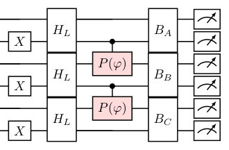
<figcaption class="paper-figure-caption"><b>Fig 1.</b> FIG. 1. The cell, three dual-rail logical qubits on six physical qubits. X prepares |0⟩L = |01⟩, and HL and the basis ro- tations Bj are matchgates. The only non-Gaussian elements are the controlled phases P(φ), and at φ = 0 the circuit is a matchgate circuit.</figcaption>
</figure>
<figure class="paper-figure-card">
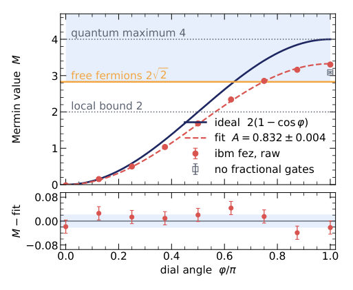
<figcaption class="paper-figure-caption"><b>Fig 2.</b> FIG. 2. The dial on ibm fez, 8192 shots per setting, raw data. Solid, the ideal 2(1−cos φ). Dashed, the fit A 2(1−cos φ) with A = 0.832 ± 0.004. Open square, a repeat without fractional gates. The residuals in the lower panel sit at the shot-noise band, so the loss is a single visibility and not a distortion of the cosine. Error bars are smaller than the markers.</figcaption>
</figure>
</div>

<p><strong>Summary.</strong> This work establishes that genuine multipartite nonlocality is the key resource for universal fermionic quantum computation, a property that cannot be captured by simple mean-field or Gaussian states. The authors prove this theoretically and experimentally certify this resource using measurements on superconducting quantum processors. It provides a deep link between fermionic physics, nonlocality, and the limits of quantum computation.</p>
<p><strong>Why it may be interesting.</strong> It bridges fundamental quantum information theory (nonlocality resource) with concrete physical implementations on superconducting qubits, providing a rigorous test of computational resource theory in fermionic settings.</p>
<details>
<summary>Detailed structure</summary>
<p><strong>Main problem.</strong> The paper investigates the resource quantification of genuine multipartite nonlocality specifically within fermionic quantum systems, contrasting it with other quantum resources.</p>
<p><strong>Main result.</strong> It proves that free fermions are fundamentally incapable of exhibiting genuine multipartite nonlocality, which is identified as the true resource for universal fermionic quantum computation.</p>
<p><strong>Method.</strong> The authors use theoretical bounds derived from Mermin and Svetlichny polynomials, combined with experimental measurements on superconducting quantum processors, to test nonlocality.</p>
<p><strong>Model / system.</strong> The system under study is free fermions, which can be simulated classically but require non-Gaussian states (like those involving controlled phases) to achieve universal quantum computation.</p>
<p><strong>Key observables.</strong> Genuine multipartite nonlocality (measured via Mermin/Svetlichny polynomials), visibility (A), and the raw measured value ($M_{raw}$).</p>
<p><strong>Important parameters / regimes.</strong> The number of parties ($n$), the angle $\varphi$ controlling the non-Gaussian element, and the number of qubits (up to 48 on IBM processors).</p>
<p><strong>Assumptions / limitations.</strong> The analysis is primarily restricted to fermionic Gaussian states and specific local bilinear readout settings, though experimental results push beyond these theoretical limits.</p>
<p><strong>Figures summary.</strong> Figure 1 illustrates a physical setup using dual-rail logical qubits on six physical qubits to implement controlled phases and matchgates.</p>
<p><strong>Paper structure.</strong> The paper progresses from theoretical bounds on fermionic Gaussian states (Theorems 1, 2, 3) to experimental demonstrations of nonlocality using controlled phases on superconducting hardware, culminating in benchmarking the monogamy law across multiple devices.</p>
</details>
<details>
<summary>Abstract</summary>
<p>A system of free fermions can be simulated on a classical computer, and a single non-Gaussian state makes it a universal quantum computer. We show that the same line bounds quantum nonlocality. Measured as fermionic qubits, free fermions carry the Bell nonlocality of one entangled pair, no more, however many parties share them, and are never genuinely multipartite nonlocal. Fermion parity is the reason. Genuine multipartite nonlocality is thus the resource of universal fermionic computation, cannot arise from any mean-field state, and we certify it on $48$ qubits of IBM processors.</p>
</details>
<p><sub><a href="#top">↑ back to top</a></sub></p>

<p><a id="paper-2609.38739"></a></p>
<h3 id="geometric-estimation-of-nv-charge-state-contributions-from-a-low-dimensional-spectral-representation"><a href="http://arxiv.org/abs/2609.38739v1">Geometric estimation of NV charge-state contributions from a low-dimensional spectral representation</a></h3>
<p><strong>Authors:</strong> Yuto Yamakawa, Keisuke Oshimi, Keigo Arai<br>
<strong>Type:</strong> both · <strong>Category:</strong> other · <strong>PDF:</strong> <a href="https://arxiv.org/pdf/2609.38739v1">https://arxiv.org/pdf/2609.38739v1</a><br>
<strong>Analysis basis:</strong> full PDF text, analyzed in chunks
<strong>Topic relevance:</strong> <code>QC/QI experiment</code> <strong>3/5</strong> · <code>quantum measurements</code> <strong>2/5</strong> · <code>interference shaping light</code> <strong>1/5</strong> · <code>quantum optics experiment</code> <strong>1/5</strong></p>
<div class="figure-strip-hint">↔ Scroll figures horizontally</div>
<div class="paper-figures-scroll">
<figure class="paper-figure-card">
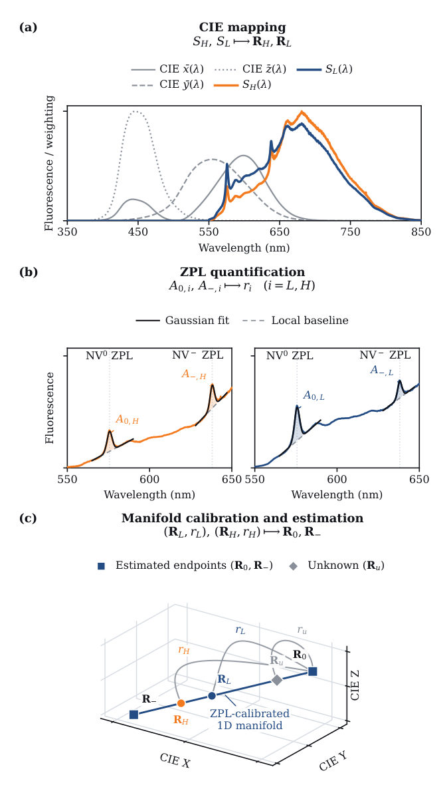
<figcaption class="paper-figure-caption"><b>Fig 1.</b> FIG. 1. Geometric quantification of charge-state-dependent PL. (a) Two area-normalized PL spectra, SH(λ) and SL(λ), with higher and lower NV−contributions, respectively. Each spectrum is mapped to a vector, RH or RL, in CIE XYZ space by integration over 550–850 nm using the CIE 1931 color-matching functions ¯x(λ), ¯y(λ), and ¯z(λ). (b) Gaussian fitting of the NV0</figcaption>
</figure>
<figure class="paper-figure-card">
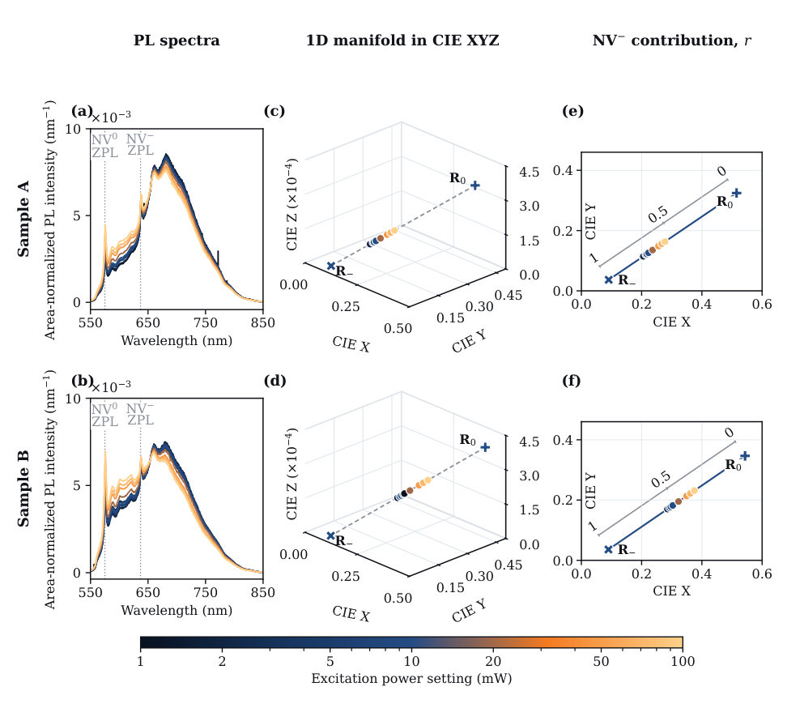
<figcaption class="paper-figure-caption"><b>Fig 2.</b> FIG. 2. Application of the CIE–ZPL method to excitation-power-dependent PL spectra. (a,b) Area-normalized PL spectra acquired at different nominal laser-output settings for Samples A and B, respectively. The dotted vertical lines indicate the NV0</figcaption>
</figure>
<figure class="paper-figure-card">
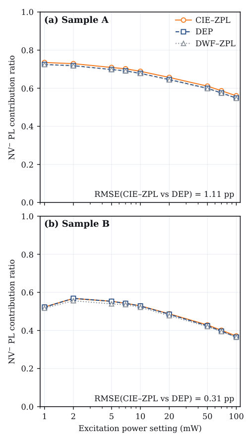
<figcaption class="paper-figure-caption"><b>Fig 3.</b> FIG. 3. Comparison of three NV−PL contribution-ratio estimation methods. NV−PL contribution ratios were es- timated as a function of excitation power for (a) Sample A and (b) Sample B using the CIE–ZPL, DEP, and DWF–ZPL methods. The RMSEs between the CIE–ZPL and DEP esti- mates were 1.11 and 0.31 percentage points (pp) for Samples A and B, respectively.</figcaption>
</figure>
<figure class="paper-figure-card">
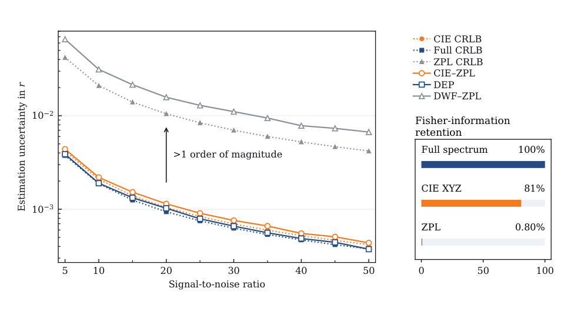
<figcaption class="paper-figure-caption"><b>Fig 4.</b> FIG. 4. Comparison of the precision of three NV−PL contribution-ratio estimation methods under additive spectral noise and the corresponding Fisher-information-based CRLBs. Zero-mean white Gaussian noise was added to the spectrum to be estimated while all method-specific calibration inputs were held fixed, and the SNR was varied to compare the CIE–ZPL, DEP, and DWF–ZPL methods. The standard deviation of the estimated NV−PL contribution ratio is shown together with the CRLBs calculated for the full-spectrum (Full), CIE XYZ (CIE), and ZPL-observable (ZPL) observation models under the same noise assumption. CIE–ZPL exhibited estimation precision comparable to DEP, with standard deviations more...</figcaption>
</figure>
</div>

<p><strong>Summary.</strong> This work introduces a geometric method to accurately quantify the relative contributions of $ ext{NV}^0$ and $    ext{NV}^-$ charge states in diamond PL spectra. By mapping spectral variations into a low-dimensional space and using ZPL data for calibration, the authors achieve high accuracy and robustness against noise. This establishes a general, physically calibrated framework for spectral sensing in quantum materials.</p>
<p><strong>Why it may be interesting.</strong> The rigorous application of information theory (Fisher Information) to spectral decomposition provides a general framework for sensing, showing how much physical information can be reliably extracted from limited spectral measurements.</p>
<details>
<summary>Detailed structure</summary>
<p><strong>Main problem.</strong> The paper addresses the challenge of quantitatively determining the relative photoluminescence (PL) contributions of $    ext{NV}^0$ and $    ext{NV}^-$ charge states from a mixed spectrum, overcoming limitations of existing methods.</p>
<p><strong>Main result.</strong> A novel geometric method using low-dimensional spectral mapping (CIE XYZ space) successfully estimates the $   ext{NV}^-$ contribution, showing agreement with independent measurements and superior noise robustness compared to ZPL-only methods.</p>
<p><strong>Method.</strong> The approach maps spectral variations into a low-dimensional manifold, calibrating the position along this manifold using Zero-Phonon Line (ZPL) information from two excitation intensities via geometric projection.</p>
<p><strong>Model / system.</strong> The system is Nitrogen-Vacancy (NV) centers in diamond, whose PL spectrum is a superposition of $   ext{NV}^0$ and $    ext{NV}^-$ emission. The spectral variation is modeled as a one-dimensional trajectory.</p>
<p><strong>Key observables.</strong> $  ext{NV}^0$ and $    ext{NV}^-$ PL contributions, the charge-state ratio $r$, and the coordinates in the CIE XYZ color space.</p>
<p><strong>Important parameters / regimes.</strong> Excitation intensity, Signal-to-Noise Ratio (SNR), and the information retention ratios (e.g., 81% for CIE XYZ).</p>
<p><strong>Assumptions / limitations.</strong> The spectral variation is assumed to lie on a low-dimensional manifold, and the method relies on physically calibrating the endpoints using ZPL features.</p>
<p><strong>Figures summary.</strong> Figures illustrate the geometric mapping of spectra to CIE XYZ vectors, the comparison of estimation results against independent methods (like Dual-Excitation Protocol), and the quantitative comparison of information retention across different spectral representations.</p>
<p><strong>Paper structure.</strong> The paper introduces the problem, details the geometric mapping methodology using CIE XYZ coordinates, validates the method against established techniques (DEP), and concludes with rigorous information-theoretic analysis comparing the fidelity of different spectral representations.</p>
</details>
<details>
<summary>Abstract</summary>
<p>Nitrogen-vacancy (NV) centers in diamond exist in neutral (NV0) and negatively charged (NV-) states, and quantifying their respective photoluminescence (PL) contributions is important for charge-state-based measurements. Existing methods either require additional experimental control or may suffer from limited physical identifiability. Here, we introduce a geometric method for determining NV charge-state contributions from PL spectra acquired at different excitation intensities. Each spectrum is mapped into a low-dimensional space through broadband spectral weighting, where changes in the relative NV0 and NV- contributions trace a one-dimensional trajectory. Zero-phonon-line (ZPL) information from two spectra physically calibrates this trajectory, enabling the NV-PL contribution to be determined by geometric projection. Measurements on two bulk single-crystal diamond samples yielded NV- contributions in close agreement with those obtained using an independent dual-excitation reference-spectrum method, with root-mean-square errors of 1.11 and 0.31 percentage points. Under additive spectral noise, the proposed method exhibited more than an order of magnitude less variation than a ZPL-only method. Fisher-information analysis further showed that the three-dimensional CIE XYZ representation retained approximately 81% of the information about the NV- contribution available in the full spectrum. These results establish a physically calibrated approach to low-dimensional spectral estimation that combines reduced experimental overhead with robust parameter estimation and provides a general framework for spectral sensing governed by a small number of physical degrees of freedom.</p>
</details>
<p><sub><a href="#top">↑ back to top</a></sub></p>

<p><a id="paper-2609.39586"></a></p>
<h3 id="how-shaped-waves-propagate-in-scattering-media"><a href="http://arxiv.org/abs/2609.39586v1">How Shaped Waves Propagate in Scattering Media</a></h3>
<p><strong>Authors:</strong> David Gaspard, Arthur Goetschy<br>
<strong>Type:</strong> theory · <strong>Category:</strong> disordered systems and neural networks · <strong>PDF:</strong> <a href="https://arxiv.org/pdf/2609.39586v1">https://arxiv.org/pdf/2609.39586v1</a><br>
<strong>Analysis basis:</strong> full PDF text, analyzed in chunks
<strong>Topic relevance:</strong> <code>interference shaping light</code> <strong>3/5</strong> · <code>Keldysh / 2PI / non-Gaussian methods</code> <strong>1/5</strong> · <code>analog quantum simulation</code> <strong>1/5</strong> · <code>driven-dissipative phase transition</code> <strong>1/5</strong> · <code>methods for driven-dissipative</code> <strong>1/5</strong></p>
<div class="figure-strip-hint">↔ Scroll figures horizontally</div>
<div class="paper-figures-scroll">
<figure class="paper-figure-card">
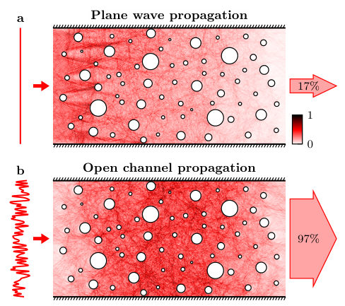
<figcaption class="paper-figure-caption"><b>Fig 1.</b> Fig. 1. Plane wave versus open channel propagation. Intensity of a monochromatic wave propagating in a two- dimensional waveguide perturbed by random fixed obstacles. The edges and obstacles are perfectly reflective and the space between them is scattering-free. a, Intensity averaged over the lowest 10 waveguide modes. b, Intensity averaged over the highest 10 transmission eigenchannels. In both panels, the in- tensity is obtained by numerically solving the wave equation (see Methods). The waveguide has width W = 83.3 λ and length L = 166.6 λ, with mean free path ℓ= 21.7 λ; it sup- ports 166 propagating modes.</figcaption>
</figure>
<figure class="paper-figure-card">
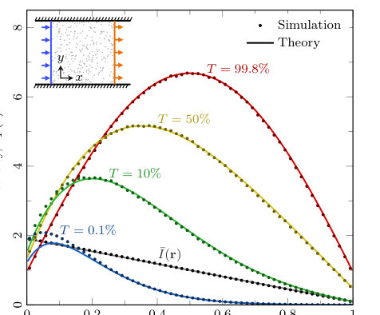
<figcaption class="paper-figure-caption"><b>Fig 2.</b> Fig. 2. Transmission eigenchannel profiles in a disor- dered waveguide. Intensity profiles of transmission eigen- channels, averaged over the cross section, as a function of the longitudinal coordinate x. Dots show numerical simulations based on the wave equation, averaged over 1000 realizations of the disorder, while continuous lines show the predictions of Eq. (4). Profiles are shown for transmission eigenvalues T = 99.8%, T = 50%, T = 10%, and T = 0.1%. The classical diffusive intensity ¯I(r), corresponding to a random incident wavefront, is also shown for comparison. The incident inten- sity is normalized to 1 for all curves. The waveguide has size L = W = 50 λ and optical thickness...</figcaption>
</figure>
<figure class="paper-figure-card">
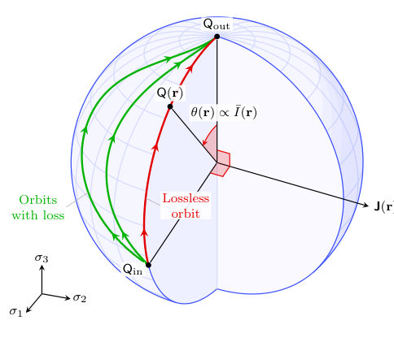
<figcaption class="paper-figure-caption"><b>Fig 3.</b> Fig. 3. Spherical manifold of Q(r). Schematic represen- tation of the manifold of Q(r) resulting from the involutive constraint Q(r)2 = 12 when projected onto the three Pauli matrices σ1, σ2, σ3. In a lossless waveguide, Eq. (3) admits a solution for Q(r) confined to a great circle connecting Qin and Qout (red curve), orthogonal to all the spatial components of the matrix current J(r), the latter being collinear in matrix space. In the presence of loss, the trajectory of Q(r) depends on the path followed (green curves) but remains constrained to the sphere (see Supplementary Sec. D). In this case, the spatial components of J(r) are not collinear in general.</figcaption>
</figure>
<figure class="paper-figure-card">
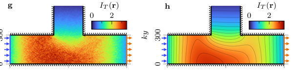
<figcaption class="paper-figure-caption"><b>Fig 4.</b> Fig. 4. Influence of boundary conditions on open channels. Wavefront control in a two-dimensional disordered waveguide with optical thickness L/ℓ= 10 in the horizontal direction. Incoming arrows indicate the controlled input region, while outgoing arrows indicate the target region where the transmission is maximized. a, b, Open channel with T = 1 when the upper duct is closed and perfectly reflecting. d, e, Open channel with T = 1 when transmission is maximized through both the upper and right ducts. g, h, Open channel when the upper duct is leaky and excluded from transmission optimization, resulting in a maximum transmission of T = 70%. Numerical simulations based on the wave equation,...</figcaption>
</figure>
<figure class="paper-figure-card">
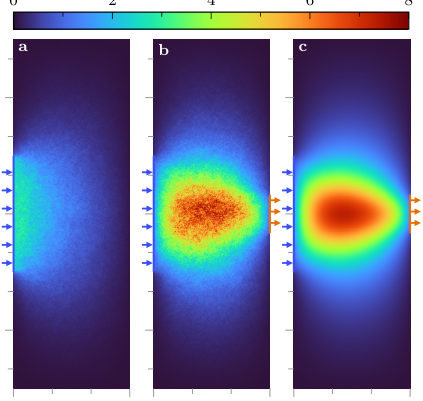
<figcaption class="paper-figure-caption"><b>Fig 5.</b> Fig. 5. Wave focusing through a disordered slab. Wave focusing through a two-dimensional disordered slab of optical thickness L/ℓ= 20, with the wave free to escape from all four edges. a, Intensity for an unshaped collimated beam. Trans- mission to the target region (orange) is T = 1.7%. b, Intensity profile of the highest transmission eigenchannel. Transmis- sion to the target region is T = 35%. Numerical simulations based on the wave equation, averaged over 100 realizations, are shown in a and b; prediction of Eq. (3) for T = 35% is shown in c.</figcaption>
</figure>
</div>

<p><strong>Summary.</strong> This work introduces a Matrix Transport Equation (MTE) to describe coherent wave propagation in scattering media, overcoming the limitations of standard radiative transport theory. The MTE tracks phase information via a complex matrix, allowing for the derivation of analytical profiles for shaped wave channels. This framework provides a powerful tool for controlling wave energy in complex, disordered structures.</p>
<p><strong>Why it may be interesting.</strong> The development of a matrix transport theory that retains phase information is highly relevant to open quantum systems and quantum optics, providing a framework to control wave dynamics beyond simple diffusive approximations.</p>
<details>
<summary>Detailed structure</summary>
<p><strong>Main problem.</strong> The paper develops a transport theory for wave propagation in scattering media when the incident wavefront is deliberately shaped, a regime beyond the scope of conventional radiative transport equations.</p>
<p><strong>Main result.</strong> A matrix transport equation (MTE) is established that governs coherent wave propagation, yielding analytical expressions for energy and current densities of transmission eigenchannels.</p>
<p><strong>Method.</strong> The theory uses a complex two-by-two matrix transport equation (MTE) that propagates phase information, contrasting it with the scalar radiance used in the standard Radiative Transport Equation (RTE).</p>
<p><strong>Model / system.</strong> The system models wave propagation in scattering media, analyzed using the MTE. The theory is applied to characterize transmission eigenchannels in disordered waveguides and slabs.</p>
<p><strong>Key observables.</strong> Transmission eigenchannel intensity profiles ($I_T(\mathbf{r})$), transmission eigenvalue distribution ($
ho(T)$), and the matrix radiance ($g(u, \mathbf{r})$).</p>
<p><strong>Important parameters / regimes.</strong> The degree of disorder, the mean transmission ($ar{T}$), and the boundary conditions of the scattering region.</p>
<p><strong>Assumptions / limitations.</strong> The primary assumption is that the MTE is necessary when wavefront shaping occurs, and the theory can be extended to include absorption and leakage.</p>
<p><strong>Figures summary.</strong> Figures compare plane wave propagation (RTE regime) versus shaped wave propagation (MTE regime), and show the derived intensity profiles ($I_T(r)$) against classical diffusion predictions ($ar{I}(r)$).</p>
<p><strong>Paper structure.</strong> The paper first introduces the MTE as an extension to the RTE, derives the analytic forms for eigenchannel profiles, and then analyzes the distribution of transmission eigenvalues ($
ho(T)$) in both lossless and lossy regimes, concluding with numerical validation using alternative parametrizations.</p>
</details>
<details>
<summary>Abstract</summary>
<p>The radiative transport equation provides a powerful framework for describing wave propagation in scattering media. However, it cannot describe coherent waves whose incident wavefront is deliberately tailored. Here we establish a transport theory for wavefront-controlled waves based on a matrix transport equation. Unlike conventional radiative transport, which propagates a scalar radiance, our theory propagates a complex two-by-two matrix that retains phase information and obeys a nonlinear transport equation, despite the underlying wave dynamics being linear. We use this matrix transport equation to derive the spatial profiles of the energy and current densities of transmission eigenchannels, from closed to open channels, in arbitrary diffusive systems. Remarkably, these profiles can be expressed analytically in terms of the solution of the conventional radiative transport equation for a random wave in the same medium. The theory further extends to energy loss, including absorption and leakage into uncontrolled channels, revealing symmetry breaking of transmission eigenchannels in complex structures. Validated against numerical solutions of the wave equation, we establish matrix transport as a framework for describing and controlling coherent wave propagation in complex media.</p>
</details>
<p><sub><a href="#top">↑ back to top</a></sub></p>

<p><a id="paper-2609.40004"></a></p>
<h3 id="many-body-topology-in-parity-preserving-tensor-networks"><a href="http://arxiv.org/abs/2609.40004v1">Many-body topology in parity-preserving tensor networks</a></h3>
<p><strong>Authors:</strong> Maksimilian Usoltcev, Nguyen Hanh Dung, Carolin Wille, Matteo Rizzi, Alexander Altland<br>
<strong>Type:</strong> theory · <strong>Category:</strong> statistical mechanics · <strong>PDF:</strong> <a href="https://arxiv.org/pdf/2609.40004v1">https://arxiv.org/pdf/2609.40004v1</a><br>
<strong>Analysis basis:</strong> full PDF text, analyzed in chunks
<strong>Topic relevance:</strong> <code>analog quantum simulation</code> <strong>3/5</strong> · <code>methods for driven-dissipative</code> <strong>2/5</strong> · <code>driven-dissipative phase transition</code> <strong>1/5</strong> · <code>non-equilibrium universality</code> <strong>1/5</strong></p>
<div class="figure-strip-hint">↔ Scroll figures horizontally</div>
<div class="paper-figures-scroll">
<figure class="paper-figure-card">
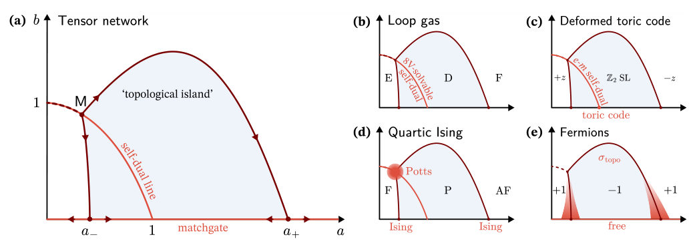
<figcaption class="paper-figure-caption"><b>Fig 1.</b> FIG. 1. Overview of the common phase diagram and its complementary representations. (a) Phase diagram of the two- parameter tensor network. The shaded region is the topological island, bounded by two continuous transition lines that meet the first-order line at the multicritical point M. Along b = 0, the transition points are a± = √</figcaption>
</figure>
<figure class="paper-figure-card">
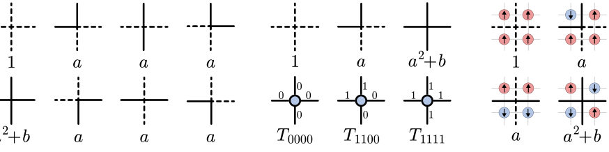
<figcaption class="paper-figure-caption"><b>Fig 2.</b> FIG. 2. Vertex configurations in different languages. (a) Weights of the eight allowed loop-gas vertex configurations. (b) Interpretation of vertex weights as components of a four-legged, bond-dimension-two tensor. (c) Spin configurations around the vertex leading to interpretation as a (generalized) Ising model.</figcaption>
</figure>
<figure class="paper-figure-card">
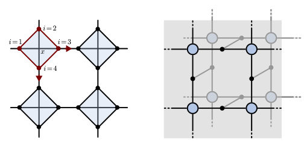
<figcaption class="paper-figure-caption"><b>Fig 3.</b> FIG. 3. Left: The fermionic tensor network on the square lattice. Right: The toric code PEPS construction.</figcaption>
</figure>
<figure class="paper-figure-card">
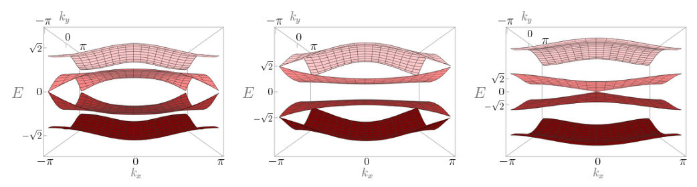
<figcaption class="paper-figure-caption"><b>Fig 4.</b> FIG. 4. Band structure of the (four-band) Hamiltonian H = −i(C(k) + A) for Ai,j = a sgn(j −i) at a = a−(left), a = 1 (center) and a = a+ (right).</figcaption>
</figure>
<figure class="paper-figure-card">
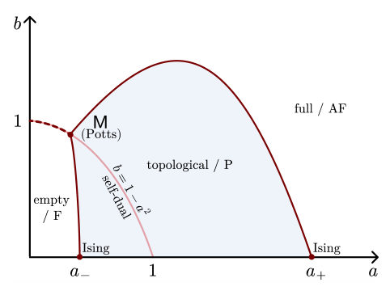
<figcaption class="paper-figure-caption"><b>Fig 5.</b> FIG. 5. The numerical phase diagram obtained from the loop-density observable ρloop = 1</figcaption>
</figure>
</div>

<p><strong>Summary.</strong> This work investigates the many-body topology embedded in planar parity-preserving tensor networks by showing its equivalence to several distinct physical models, including the Ising model and loop gas. By unifying these descriptions, the authors map out a comprehensive phase diagram centered around a robust 'topological island' phase. The study demonstrates the power of using complementary theoretical tools to characterize complex quantum critical behavior.</p>
<p><strong>Why it may be interesting.</strong> The deep connection between topological order, critical phenomena (Ising model), and modern computational tools (tensor networks) provides a powerful framework for understanding quantum phase transitions in strongly correlated systems.</p>
<details>
<summary>Detailed structure</summary>
<p><strong>Main problem.</strong> The paper analyzes the many-body topology encoded within planar parity-preserving tensor networks (ppTNs) and unifies its description across multiple seemingly different physical models.</p>
<p><strong>Main result.</strong> The phase diagram is shown to be unified by complementary descriptions (fermionic, loop gas, Ising model), revealing a central 'topological island' phase characterized by a robust $\mathbb{Z}_2$ invariant.</p>
<p><strong>Method.</strong> The analysis employs fermionic perturbation theory, tensor-network numerics, and duality transformations to map the system's partition function onto several equivalent mathematical and physical forms.</p>
<p><strong>Model / system.</strong> The core model is a two-parameter planar parity-preserving tensor network (ppTN) defined by parameters $a$ and $b$. This model is shown to be equivalent to a loop gas, a deformed toric-code state, and a quartic Ising model.</p>
<p><strong>Key observables.</strong> The topological invariant ($\sigma_{\text{topo}}$), the Chern number ($C$), and the phase boundaries separating different ordered phases.</p>
<p><strong>Important parameters / regimes.</strong> The two control parameters, $a$ and $b$, which govern the deformation away from the free-fermion limit. The special line $b = 1 - a^2$ is also crucial.</p>
<p><strong>Assumptions / limitations.</strong> The analysis relies on mapping the interacting system to an effective free-fermion theory to predict phase boundaries, and the cancellation of fixed seam factors confirms the topological invariant's robustness.</p>
<p><strong>Figures summary.</strong> Figure 1 provides an overview of the common phase diagram, illustrating the 'topological island' across the loop gas, deformed toric code, quartic Ising, and fermionic representations.</p>
<p><strong>Paper structure.</strong> The paper establishes the equivalence between the ppTN and several other models, analyzes the topological invariant using fermionic methods, and uses numerical and analytical techniques to map out the complete phase diagram and critical lines.</p>
</details>
<details>
<summary>Abstract</summary>
<p>Planar parity-preserving tensor networks (ppTNs) admit a fermionic formulation in which the Gaussian, efficiently contractible limit is deformed by local interactions. We investigate how many-body methods can be used to analyze such contractions in a minimal two-parameter ppTN. Its contraction is simultaneously an interacting fermionic partition function, a loop gas, a deformed toric-code norm, and a quartic Ising model, allowing the same phase diagram to be approached with complementary tools. At its center lies a `topological island', characterized beyond the Gaussian limit by a boundary-twist $\mathbb Z_2$ indicator that reduces to Chern-number parity and admits a loop-winding interpretation under duality. Fermionic perturbation theory predicts the interacting phase boundaries, tensor-network numerics establish their critical behavior, and the loop and spin descriptions reveal a self-dual line with a $c=1$ four-state-Potts multicritical fixed point.</p>
</details>
<p><sub><a href="#top">↑ back to top</a></sub></p>

<p><a id="paper-2609.38529"></a></p>
<h3 id="single-particle-detection-of-the-neel-transition-in-lacromath505math-microcrystals-via-widefield-nitrogen-vacancy-center-magnetic-imaging"><a href="http://arxiv.org/abs/2609.38529v1">Single-particle detection of the Néel transition in LaCrO$_3$ microcrystals via widefield nitrogen-vacancy center magnetic imaging</a></h3>
<p><strong>Authors:</strong> Carson O. Patterson, Ethan Q. Williams, Eden Tzanetopoulos, Benjamin C. Li, Rachel T. Smith, Matthew Chang, Hideyuki Watanabe, Daniel R. Gamelin, Kai-Mei C. Fu<br>
<strong>Type:</strong> experiment · <strong>Category:</strong> statistical mechanics · <strong>PDF:</strong> <a href="https://arxiv.org/pdf/2609.38529v1">https://arxiv.org/pdf/2609.38529v1</a><br>
<strong>Analysis basis:</strong> full PDF text, analyzed in chunks
<strong>Topic relevance:</strong> <code>QC/QI experiment</code> <strong>3/5</strong> · <code>quantum measurements</code> <strong>3/5</strong> · <code>analog quantum simulation</code> <strong>1/5</strong></p>
<div class="figure-strip-hint">↔ Scroll figures horizontally</div>
<div class="paper-figures-scroll">
<figure class="paper-figure-card">
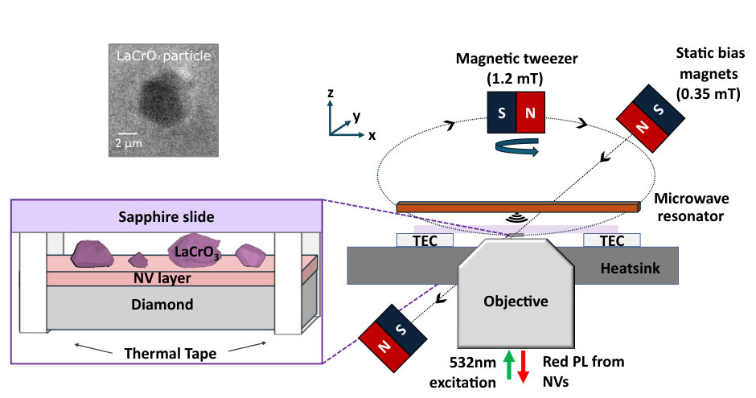
<figcaption class="paper-figure-caption"><b>Fig 1.</b> FIG. 1. The NV diamond microscope. LaCrO3 samples were dropcast onto the diamond surface and the diamond was taped to a thermally conductive sapphire slide via thermal tape. The particles were imaged from below through the ∼100-µm thick diamond sample. The sapphire slide was mounted to the sample stage, which also served as a heatsink, via two thermo-electric coolers (TECs). Permanent magnets provided a static bias field in the x-z plane while the magnetic tweezer added a rotating 1.2 mT bias field in the x-y plane. The inset shows a brightfield image of Particle 1 on the diamond sensor surface.</figcaption>
</figure>
<figure class="paper-figure-card">
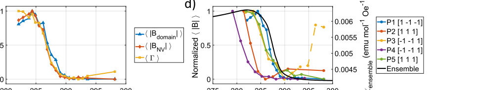
<figcaption class="paper-figure-caption"><b>Fig 2.</b> FIG. 2. (a) Cartoon of the spin orientations in a disordered paramagnetic state (top) and canted antiferromagnetic state (bottom). Blue and orange spins are canted downward and upward, respectively. (b) Representative magnetic field maps from a temperature sweep on Particle 1 collected using ∼100 mW of laser power. Each map shows the projection of the magnetic field along the NV [1 -1 -1] axis directly beneath the particle as the temperature is swept down from room temperature. The ∼1 mT bias field has been subtracted to only show the µT-scale field from the LaCrO3 particle. All temperatures have a ±0.4 K calibration uncertainty of the offset term in the linear function [38] that converts...</figcaption>
</figure>
<figure class="paper-figure-card">
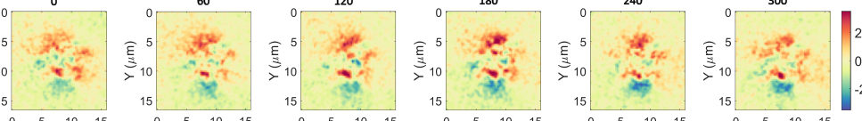
<figcaption class="paper-figure-caption"><b>Fig 3.</b> FIG. 3. Particle 1 magnetic signal for varying angles (in degrees) of the ∼1 mT in-plane component of the applied field while temperature is held constant to within 2 degrees of 284 K.</figcaption>
</figure>
<figure class="paper-figure-card">
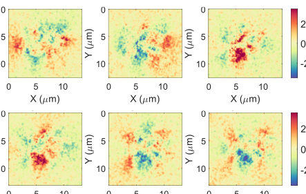
<figcaption class="paper-figure-caption"><b>Fig 4.</b> FIG. 4. Selected magnetic field maps from the temperature cycling experiment showing the projection of the magnetic field along the [1 -1 -1] NV axis underneath Particle 1. Each map was acquired at 283 ±0.4 K, well below the onset of the Néel transition, and the temperature was brought up to 298 K for 30 min between each acquisition to allow the particle to return to a disordered paramagnetic state. The magnetic field maps are all unique, highlighted by the variety of qualitative features in the three magnetic field maps shown in the top row, but similar features appear across multiple cooling cy- cles; for example, the three maps in the bottom row show a prominent triangular feature on the...</figcaption>
</figure>
</div>

<p><strong>Summary.</strong> This work uses single-particle nitrogen-vacancy (NV) magnetometry to image the magnetic behavior of $  ext{LaCrO}_3$ microcrystals, resolving the Néel transition at the particle level. By mapping stray magnetic fields, the researchers confirmed the antiferromagnetic ordering and provided evidence for structurally pinned magnetic domains. This technique establishes a powerful new tool for correlating local crystal morphology with bulk magnetic phase transitions.</p>
<p><strong>Why it may be interesting.</strong> The use of single-particle magnetometry to probe phase transitions and domain structure in magnetic materials provides a highly localized, spatially resolved view of collective phenomena, which is valuable for understanding emergent behavior in complex quantum systems.</p>
<details>
<summary>Detailed structure</summary>
<p><strong>Main problem.</strong> The study aims to understand how synthesis conditions and particle morphology influence the underlying magnetic ordering in rare-earth orthochromites, overcoming the limitations of ensemble averaging techniques.</p>
<p><strong>Main result.</strong> Single-particle NV magnetometry successfully resolved the antiferromagnetic Néel transition in individual $    ext{LaCrO}_3$ microcrystals, revealing evidence of structurally pinned magnetic domains.</p>
<p><strong>Method.</strong> Widefield nitrogen-vacancy (NV) magnetometry was employed to image the stray magnetic fields emanating from individual microcrystals as a function of temperature and applied field.</p>
<p><strong>Model / system.</strong> The physical system is $    ext{LaCrO}_3$ microcrystals, which exhibit a temperature-dependent Néel transition from a paramagnetic to an antiferromagnetic state. The magnetic ordering is characterized by canted antiferromagnetism and domain structures.</p>
<p><strong>Key observables.</strong> Temperature dependence of the stray magnetic field ($\langle|\mathbf{B}\cdot\mathbf{V}|
angle$), magnetic field patterns during thermal cycling, and the comparison of signals derived from different NV center measurements.</p>
<p><strong>Important parameters / regimes.</strong> Néel temperature ($ ext{T}_ ext{N}$), temperature range (278 K to 298 K), and the magnitude of the weak ferromagnetic moment.</p>
<p><strong>Assumptions / limitations.</strong> The structural scale is assumed to dominate the domain size over the magnetic correlation length, and the diamond temperature is used as a proxy for the particle temperature.</p>
<p><strong>Figures summary.</strong> Figures show magnetic field maps across temperature sweeps, comparisons of magnetization curves derived from different NV measurements, and analysis of magnetic field patterns during thermal cycling and field variation.</p>
<p><strong>Paper structure.</strong> The paper establishes the need for single-particle characterization, details the NV magnetometry setup and measurements on multiple particles, presents evidence for the Néel transition, and concludes by analyzing domain structure stability through thermal cycling.</p>
</details>
<details>
<summary>Abstract</summary>
<p>Rare-earth orthochromites exhibit rich, chemically tunable magnetic behavior, making them attractive for temperature sensing and temperature-dependent switching applications. Realizing this potential requires understanding how synthesis conditions and particle morphology influence the underlying Cr$^{3+}$ magnetic ordering. Orthochromite magnetism has traditionally been characterized by ensemble techniques such as neutron diffraction and SQUID magnetometry, which report only averaged magnetic properties and cannot access particle-level information. Here we use widefield nitrogen-vacancy (NV) magnetometry to image the stray magnetic fields of individual LaCrO$_3$ microcrystals produced via molten salt synthesis, resolving the antiferromagnetic Néel transition in single particles. Of the 18 particles measured between 278 and 298 K, five show a clear onset of magnetization near the ensemble Néel temperature, four show no measurable magnetic signal, and nine display temperature-independent signatures consistent with localized magnetic impurities undetected by ensemble measurements. Below the Néel temperature, particle magnetization remains fixed under a rotating in-plane field, consistent with canted antiferromagnetic ordering rather than paramagnetism, while repeated thermal cycling shows that the magnetic field pattern varies between cooldowns with certain features recurring at the same locations, consistent with micron-scale structurally pinned antiferromagnetic domains in which the sign of the weak ferromagnetic moment is set independently each time they pass through the Néel transition. These results establish single-particle NV magnetometry as a sensitive probe of magnetic ordering and domain structure in individual microcrystals, a key step toward correlating individual particle morphology and defect structure with magnetic ordering in orthochromites.</p>
</details>
<p><sub><a href="#top">↑ back to top</a></sub></p>

<p><a id="paper-2609.38713"></a></p>
<h3 id="when-error-mitigation-makes-things-worse-budget-aware-evaluation-extrapolation-failure-and-the-calibration-trust-boundary"><a href="http://arxiv.org/abs/2609.38713v1">When Error Mitigation Makes Things Worse: Budget-Aware Evaluation, Extrapolation Failure, and the Calibration Trust Boundary</a></h3>
<p><strong>Authors:</strong> Guilin Zhang, Kai Zhao, Xiquan Cui, Henry Heng, Xu Chu, Aletta Johanna Blanken<br>
<strong>Type:</strong> both · <strong>Category:</strong> quantum information and computing · <strong>PDF:</strong> <a href="https://arxiv.org/pdf/2609.38713v1">https://arxiv.org/pdf/2609.38713v1</a><br>
<strong>Analysis basis:</strong> full PDF text, analyzed in chunks
<strong>Topic relevance:</strong> <code>QC/QI experiment</code> <strong>3/5</strong> · <code>methods for driven-dissipative</code> <strong>2/5</strong> · <code>quantum measurements</code> <strong>2/5</strong></p>
<div class="figure-strip-hint">↔ Scroll figures horizontally</div>
<div class="paper-figures-scroll">
<figure class="paper-figure-card">
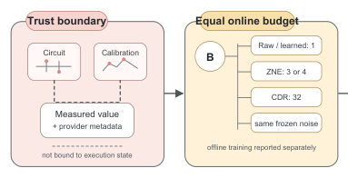
<figcaption class="paper-figure-caption"><b>Fig 1.</b> Figure 1: Study design. Four mitigation pipelines share one online shot budget and a frozen noise snapshot. Three simulated regimes and a small IBM Heron run support the accuracy–cost, ZNE tail-risk, and metadata-attack analyses.</figcaption>
</figure>
<figure class="paper-figure-card">
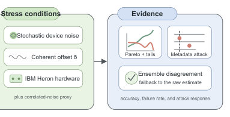
<figcaption class="paper-figure-caption"><b>Fig 2.</b> Figure 1 summarizes the study. We contribute three pieces of evidence. First, we map the tail-risk boundary of ZNE under coherent offset error and reproduce the failure pattern in a small real- hardware study. Second, we compare raw execution, learned correction, ZNE, and CDR at the same online shot budget, while keeping the learned model’s offline simulation cost visible. Third, we formalize provider-reported calibration as an execution-unbound input and evaluate a projected- gradient metadata attack. The learned corrector is a test case rather than an architectural contribution: CDR remains more accurate when its larger online budget is affordable.</figcaption>
</figure>
<figure class="paper-figure-card">

<figcaption class="paper-figure-caption"><b>Fig 3.</b> Figure 2: Equal-online-budget comparison at n = 8 (100 instances; median |error|, IQR shaded). Each method splits the same inference budget B across its required executions (Table 1); NEM’s offline simulation cost is reported separately. NEM is below the raw baseline at B ≤214 in both regimes, CDR crosses over at the largest budget, and ZNE medians track the raw line while its mean diverges.</figcaption>
</figure>
<figure class="paper-figure-card">
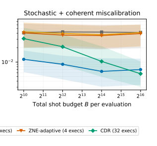
<figcaption class="paper-figure-caption"><b>Fig 4.</b> Figure 2 compares online inference after the learned model has been trained; Table 4 reports every value. Under coherent miscalibration, NEM reduces mean error by 72–81% across B = 210–216.</figcaption>
</figure>
<figure class="paper-figure-card">
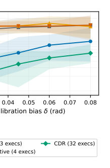
<figcaption class="paper-figure-caption"><b>Fig 5.</b> Figure 3: Median |error| versus miscalibration strength δ at n = 8 (80 instances per point, 8,192 shots per execution). ZNE medians coincide with the unmitigated baseline at every δ; NEM matches CDR at small δ at 1/32 the quantum cost and declines smoothly as the unlearnable coherent share grows.</figcaption>
</figure>
</div>

<p><strong>Summary.</strong> This work critically evaluates error mitigation techniques for near-term quantum computers, showing that methods like Zero-Noise Extrapolation can amplify errors, especially under miscalibration. The authors introduce budget-aware evaluation and demonstrate that the entire pipeline is vulnerable to attacks on calibration metadata. It serves as a crucial warning for the field regarding the need for robust, cost-aware validation protocols.</p>
<p><strong>Why it may be interesting.</strong> It provides critical, practical guidelines for quantum algorithm development, warning practitioners that simply applying standard mitigation techniques without understanding their failure modes or cost implications can lead to worse results.</p>
<details>
<summary>Detailed structure</summary>
<p><strong>Main problem.</strong> The paper investigates the reliability and potential pitfalls of error mitigation techniques in near-term quantum computing, demonstrating that these methods can sometimes amplify errors or fail under specific conditions.</p>
<p><strong>Main result.</strong> Error mitigation techniques like ZNE can significantly amplify errors, and learned correctors are vulnerable to metadata attacks, necessitating budget-aware evaluation and rigorous calibration integrity checks.</p>
<p><strong>Method.</strong> The authors compare multiple error mitigation strategies (ZNE, CDR, learned neural correctors) by evaluating them under fixed online shot budgets, analyzing tail risk, and stress-testing the calibration metadata using projected gradient descent.</p>
<p><strong>Model / system.</strong> The study uses simulated quantum circuits (VQA ansatzes) on $n=4-16$ qubits, tested against both simulated noise and a small IBM Heron hardware platform. The core focus is on estimating expectation values $\langle H 
angle$ in the presence of noise.</p>
<p><strong>Key observables.</strong> Mean error, median error, $p_{95}$ error, and the fraction of instances where the mitigation method performs worse than the raw, unmitigated estimate.</p>
<p><strong>Important parameters / regimes.</strong> Online shot budget, offline training cost, coherent offset ($\delta$), and the integrity of provider-reported calibration metadata.</p>
<p><strong>Assumptions / limitations.</strong> The analysis assumes that the mitigation layer is a classical post-processing step, and the study highlights the gap between simulation results and real-world hardware transfer.</p>
<p><strong>Figures summary.</strong> Figures summarize comparisons of various pipelines across budgets and stress conditions; one figure illustrates the budget-conditioned neural error mitigation approach, and others show error vs. qubit count or miscalibration strength.</p>
<p><strong>Paper structure.</strong> The paper progresses by first establishing the problem of error amplification, then comparing various mitigation methods under fixed budgets, detailing the performance of a learned corrector, and finally conducting a security analysis via metadata stress testing.</p>
</details>
<details>
<summary>Abstract</summary>
<p>Error mitigation is expected to turn noisy quantum measurements into more useful estimates. We show that it can instead amplify error. Under control-offset miscalibration, the evaluated unconstrained zero-noise extrapolation (ZNE) estimators are worse than no mitigation on 38-63% of simulated instances and produce extreme tail errors. A small IBM Heron study finds worsening on 80-88% of 18 instances across two depths, with mean error 3.0-4.1 times the raw error. In simulation, the median changes little, so median-only monitoring misses the failures. We then compare methods at the same online shot budget per evaluation and report offline training cost separately. After that cost is amortized, a budget-conditioned neural corrector occupies the low-budget end of the simulated accuracy-cost frontier and falls back to the raw estimate when an ensemble disagrees; its hardware transfer remains unsuccessful. Finally, we treat provider-reported calibration as an input that is not bound to the execution-time device state. A white-box projected-gradient stress test on this metadata increases the corrector's error 8.1 times within the feature ranges used for training and evades the disagreement monitor on half of the worsened cases. Together, the results connect budget-aware evaluation, tail risk, and calibration integrity in near-term quantum learning pipelines.</p>
</details>
<p><sub><a href="#top">↑ back to top</a></sub></p>

<p><a id="paper-2609.40309"></a></p>
<h3 id="decoupling-of-the-qaoa-into-independent-spin-boson-systems-and-high-depth-performance-on-pure-and-mixed-spin-glasses"><a href="http://arxiv.org/abs/2609.40309v1">Decoupling of the QAOA into independent spin-boson systems and high-depth performance on pure and mixed spin glasses</a></h3>
<p><strong>Authors:</strong> Sami Boulebnane, Abid Khan, Pragna Subrahmanya, Dylan Herman, Edward Farhi, Benjamin Villalonga, Ruslan Shaydulin<br>
<strong>Type:</strong> theory · <strong>Category:</strong> disordered systems and neural networks · <strong>PDF:</strong> <a href="https://arxiv.org/pdf/2609.40309v1">https://arxiv.org/pdf/2609.40309v1</a><br>
<strong>Analysis basis:</strong> full PDF text, analyzed in chunks
<strong>Topic relevance:</strong> <code>analog quantum simulation</code> <strong>3/5</strong> · <code>methods for driven-dissipative</code> <strong>3/5</strong></p>
<div class="figure-strip-hint">↔ Scroll figures horizontally</div>
<div class="paper-figures-scroll">
<figure class="paper-figure-card">
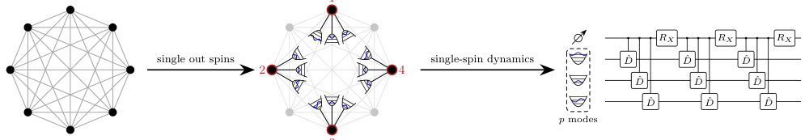
<figcaption class="paper-figure-caption"><b>Fig 1.</b> FIG. 1. Approximate decoupling of a subset {1, 2, 3, 4} of spins in spin-glass QAOA. In the thermodynamic limit, these spins become independent, with each coupled to its own system of bosons. The evolution of each spin is described by the recursive spin-boson dynamics presented in Sec. II.</figcaption>
</figure>
<figure class="paper-figure-card">
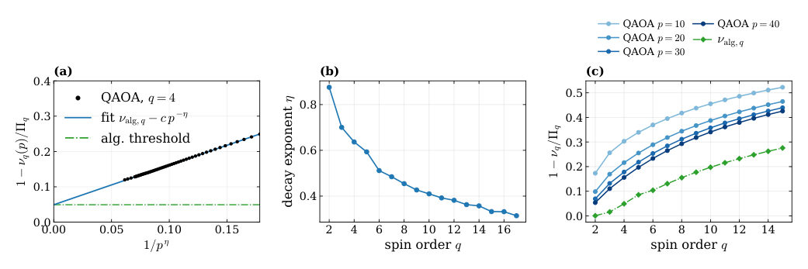
<figcaption class="paper-figure-caption"><b>Fig 2.</b> FIG. 2. Optimized QAOA on pure q-spin models. (a) Relative gap to the Parisi value, 1 −νq(p)/Πq, for the pure 4-spin model against 1/pη, with the fit νq(p) = νalg,q −c p−η (blue), whose p →∞asymptote is pinned to the algorithmic threshold (green dash-dot); c = 0.669 and η = 0.648, from the 54 points with 15 ≤p ≤80. (b) Decay exponent η (left axis) and the algorithmic threshold as a fraction of the Parisi optimum, νalg,q/Πq (right axis, dash-dot), against spin order; curve colors match their axes, which scale independently. (c) Relative gap 1 −νq/Πq at fixed depths p = 10, 20, 30, 40 (blue shades) and at the algorithmic threshold (green dash-dot).</figcaption>
</figure>
<figure class="paper-figure-card">
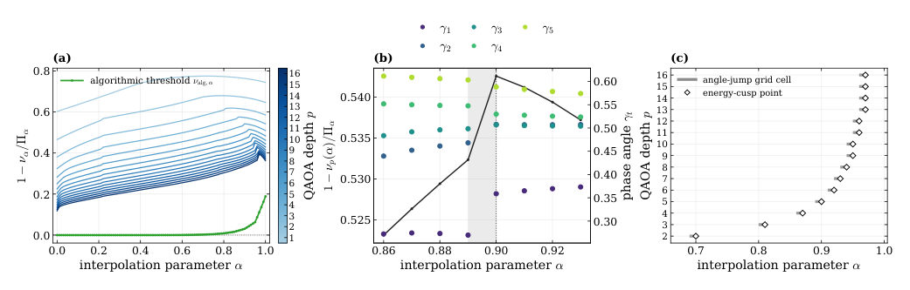
<figcaption class="paper-figure-caption"><b>Fig 3.</b> FIG. 3. QAOA along the 2-spin to 8-spin path ξ(t) = (1 −α)t2/2 + αt8/8 (pure 2-spin at α = 0, pure 8-spin at α = 1). (a) Algorithmic threshold and optimized QAOA energy densities for different values of p. Energies are reported as the relative gap to the optimum 1 −να/Πα; each blue curve is a fixed QAOA depth p (darker is deeper), and the green curve is the algorithmic threshold νalg,α. The optimized energy exhibits points of non-differentiability (“cusp”). The rightmost cusp occurs at an increasingly higher value of α as p increases. (b) Optimized γ angles and energy at p = 5 around the rightmost cusp, located at a threshold value α∗∈[0.89, 0.90]. Discontinuity of optimized γ angles is...</figcaption>
</figure>
<figure class="paper-figure-card">
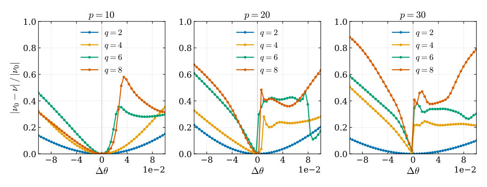
<figcaption class="paper-figure-caption"><b>Fig 4.</b> FIG. 4. Relative energy change |ν0 −ν|/|ν0| vs. signed angle displacement ∆θ along the residual gradient direction at the optimized angles, where |∆θ| is the largest displacement applied to any single angle. The panels correspond to QAOA depths p = 10, 20, 30; within each panel, the spin orders q = 2, 4, 6, 8 are shown, with markers at the sampled displacements (50 per curve). All panels share the fixed ranges ∆θ ∈[−10−1, 10−1] and |ν0 −ν|/|ν0| ∈[0, 1]. The basin narrows as p grows for every order except q = 2, and at each depth the largest relative change over the window increases with spin order; the individual curves are non-monotonic in ∆θ. Due to this narrow gorge phenomenon,...</figcaption>
</figure>
</div>

<p><strong>Summary.</strong> This work develops a generalized spin-boson mapping to overcome the exponential computational barrier in analyzing the Quantum Approximate Optimization Algorithm (QAOA) on large spin glasses. By showing that the system decouples into independent spin-boson units in the infinite-size limit, the authors enable the calculation of QAOA energies at previously inaccessible depths. This provides deep theoretical insight into the scaling and limitations of quantum optimization algorithms.</p>
<p><strong>Why it may be interesting.</strong> The spin-boson mapping provides a powerful, analytically tractable framework to analyze complex, many-body quantum optimization algorithms like QAOA, connecting quantum computation performance to established models in condensed matter physics.</p>
<details>
<summary>Detailed structure</summary>
<p><strong>Main problem.</strong> The paper addresses the challenge of studying the Quantum Approximate Optimization Algorithm (QAOA) performance on large spin glasses, especially in the high-depth regime, where exact calculations become exponentially costly.</p>
<p><strong>Main result.</strong> The authors show that for mixed spin glasses, the QAOA energy calculation can be mapped onto an effective, solvable spin-boson system, allowing for recursive computation at depths previously intractable.</p>
<p><strong>Method.</strong> The core method involves establishing a generalized spin-boson mapping by demonstrating that spins approximately decouple into independent spin-boson systems in the thermodynamic limit, enabling the use of tensor network techniques for energy evaluation.</p>
<p><strong>Model / system.</strong> The system studied is the spin glass, modeled by a Hamiltonian involving couplings $J(q)$ and coefficients $c_q$. The analysis focuses on the QAOA circuit structure applied to these spin glass Hamiltonians.</p>
<p><strong>Key observables.</strong> QAOA energy density ($
u_q(p)$), the algorithmic threshold ($
u_{ ext{alg},q}$), and the relative gap between these two values.</p>
<p><strong>Important parameters / regimes.</strong> QAOA depth ($p$), spin order ($q$), and the infinite-size limit ($n 	o \infty$).</p>
<p><strong>Assumptions / limitations.</strong> The spin-boson mapping is an approximation for finite size, becoming exact only in the infinite-size limit, and the method only computes energy, not the full quantum state.</p>
<p><strong>Figures summary.</strong> Figures illustrate the approximate decoupling of spins into independent spin-boson systems in the thermodynamic limit, and show the decay of QAOA energy density ($
u_q(p)$) versus depth ($p$) for various spin orders ($q$).</p>
<p><strong>Paper structure.</strong> The paper first establishes the spin-boson mapping for QAOA energy calculation, providing a recursive procedure. It then applies this to numerically optimize QAOA on pure and mixed spin glasses, analyzing the convergence trends as a function of spin order and depth.</p>
</details>
<details>
<summary>Abstract</summary>
<p>The Quantum Approximate Optimization Algorithm (QAOA) is regarded as a promising candidate for near-term quantum advantage in combinatorial optimization, yet our ability to study it at scale is limited. Exact recursive formulas have been introduced for predicting QAOA performance on large spin glasses, but the computational cost of evaluating them grows exponentially with the number of QAOA layers, preventing the study of QAOA in the promising high-depth regime. In this work, we show that for the task of computing QAOA energy on any mixed dense spin glass problem, spins approximately decouple into independent spin-boson systems. In the infinite-size limit, the decoupling becomes exact, establishing the spin-boson mapping as a natural framework for the many-body physics of QAOA. This generalized spin-boson mapping gives a recursive procedure for computing QAOA energies that can be executed at modest cost using tensor networks. As a numerical application, we optimize QAOA on pure and mixed spin glasses at depths intractable for prior techniques, observing that higher-degree problems require more layers for a comparable approximation ratio while angle optimization becomes more challenging. While decoupling enables the evaluations of QAOA energies at large size and depth, it does not enable strong simulation of QAOA; a quantum computer is required to sample the bitstring corresponding to the predicted energy.</p>
</details>
<p><sub><a href="#top">↑ back to top</a></sub></p>

<p><a id="paper-2609.40349"></a></p>
<h3 id="efficient-calculation-of-equilibrium-correlation-functions"><a href="http://arxiv.org/abs/2609.40349v1">Efficient Calculation of Equilibrium Correlation Functions</a></h3>
<p><strong>Authors:</strong> Yizhi Shen, Roel Van Beeumen, Wibe A. de Jong, Efekan Kökcü<br>
<strong>Type:</strong> theory · <strong>Category:</strong> statistical mechanics · <strong>PDF:</strong> <a href="https://arxiv.org/pdf/2609.40349v1">https://arxiv.org/pdf/2609.40349v1</a><br>
<strong>Analysis basis:</strong> full PDF text, analyzed in chunks
<strong>Topic relevance:</strong> <code>analog quantum simulation</code> <strong>3/5</strong> · <code>Keldysh / 2PI / non-Gaussian methods</code> <strong>2/5</strong> · <code>methods for driven-dissipative</code> <strong>1/5</strong></p>
<div class="figure-strip-hint">↔ Scroll figures horizontally</div>
<div class="paper-figures-scroll">
<figure class="paper-figure-card">
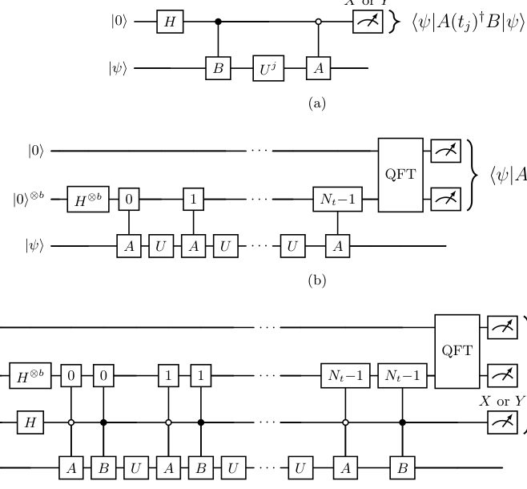
<figcaption class="paper-figure-caption"><b>Fig 1.</b> FIG. 1. Comparison of circuits for the equilibrium two-point correlation function GAB(tj) = ⟨ψ| A(tj)†B |ψ⟩on the time grid tj = j∆t, with U = e−i∆tH. (a) Hadamard test circuit. The ancilla selects which operator acts, i.e., A on the |0⟩branch (open circle) and B on the |1⟩branch (filled circle), and its X or Y expectation value recovers the real or imaginary part of GAB(tj) for the single time tj fixed by the circuit. (b) Clock circuit for the autocorrelation function GAA(tj) = ⟨ψ| A(tj)†A |ψ⟩. A clock register of b = log2 Nt qubits in an equal superposition sets the insertion time: the boxed value r on the clock wire conditions the insertion of A on the clock value r, and the system...</figcaption>
</figure>
<figure class="paper-figure-card">
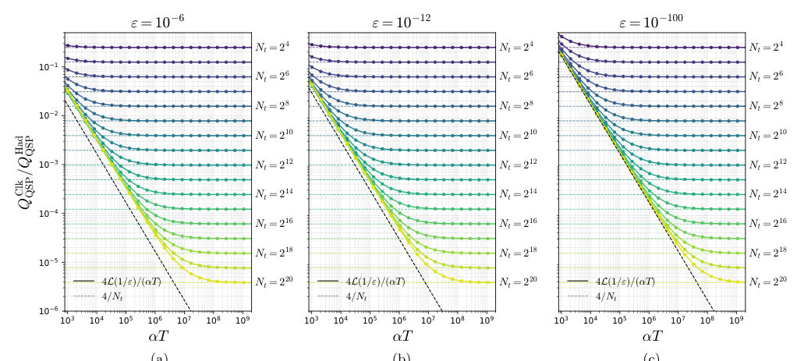
<figcaption class="paper-figure-caption"><b>Fig 2.</b> FIG. 2. Ratio of the qubitization-based Hamiltonian simulation costs of the clock and Hadamard-test algorithms, QClk QSP/QHT QSP, as a function of αT. The panels show simulation accuracies (a) ε = 10−6, (b) ε = 10−12, and (c) ε = 10−100. Different curves correspond to different values of Nt. Each ratio initially follows the O(1/(αT)) scaling in the L(ε) ≪αT ≪NtL(Nt/ε) regime, and eventually converges to the 4/Nt scaling in the αT ≫NtL(Nt/ε) regime. At ε = 10−6 and ε = 10−12, we observe that the clock algorithm reduces the quantum simulation resources by up to two orders of magnitude for αT ≳104.</figcaption>
</figure>
<figure class="paper-figure-card">
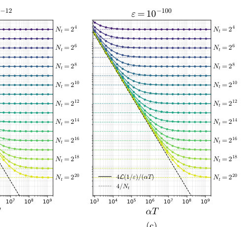
<figcaption class="paper-figure-caption"><b>Fig 3.</b> Fig. 2 plots the estimated quantum resource ratios for ε = 10−6, 10−12,10−100 within panels (a)-(c) respectively, across Nt = 24, 25, . . . , 220. For each Nt and ε, the ratio of clock-algorithm resources to Hadamard-test resources, QClk QSP/QHT QSP, exhibits an initial O(1/(αT)) scaling and then approaches an O(∆t/T) asymptote at large αT. To understand this behavior, we distinguish the three limits defined by the interplay of evolution-time and precision- overhead terms αT, L(ε), and NtL(Nt/ε). Case 1: αT ≫NtL(Nt/ε). Here, the cost is dominated by evolution time. The clock scales as O(Nt) per round while the Hadamard test scales as O(N 2 t ), yielding</figcaption>
</figure>
<figure class="paper-figure-card">
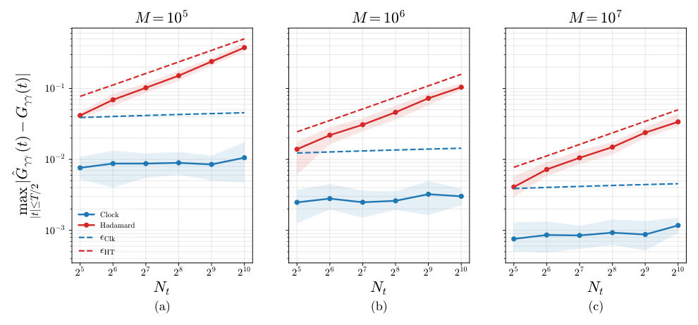
<figcaption class="paper-figure-caption"><b>Fig 4.</b> FIG. 3. Theoretical and numerical errors of Gγγ(t) calculated with the clock and Hadamard-test protocols. The two approaches are compared using an equal qubitization query budget, with M total shots for the clock algorithm and 2M total shots for the Hadamard test. We choose M = 105 in panel (a), M = 106 in panel (b), and M = 107 in panel (c). Both the Hadamard test and the clock algorithm were evaluated over 10 independent runs. The solid lines indicate the mean error, and the top (bottom) boundaries of the shaded regions indicate minimum (maximum) error. The dashed lines mark the theoretical precision given in Eq. (46). The Hadamard-test error increases much more rapidly with Nt, while the...</figcaption>
</figure>
<figure class="paper-figure-card">
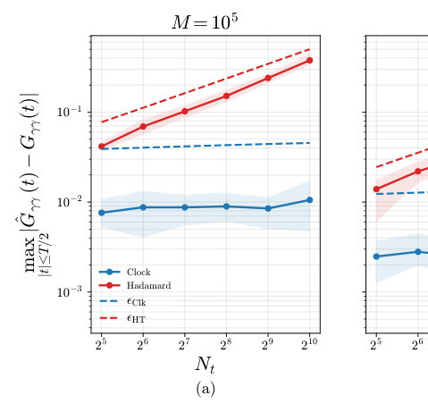
<figcaption class="paper-figure-caption"><b>Fig 5.</b> Fig. 3 shows values of the maximum estimation error, max|t|≤T/2 | ˆGγγ(t)−Gγγ(t)|, for the clock algorithm and the Hadamard test, together with their theoretical upper bounds. We notice that the numerical errors consistently track the predicted Nt-dependence in the upper bounds ϵClk and ϵHT, although these bounds appear conservative. Across simulation, the Hadamard-test error is on average ∼0.6ϵHT, while the clock error is ∼0.2ϵClk. The actual</figcaption>
</figure>
</div>

<p><strong>Summary.</strong> This paper introduces a quantum algorithm to calculate equilibrium correlation functions by encoding time into a quantum clock register. This technique allows all time lags to be computed simultaneously using a single circuit run, achieving an optimal resource scaling of $O(N_t \log N_t)$. This drastically improves upon previous methods, making the simulation of dynamic properties in many-body systems much more efficient.</p>
<p><strong>Why it may be interesting.</strong> This work provides a significant algorithmic improvement for calculating fundamental quantities in condensed matter theory, directly impacting how quantum simulations of thermal or equilibrium dynamics can be performed on near-term quantum hardware.</p>
<details>
<summary>Detailed structure</summary>
<p><strong>Main problem.</strong> The paper addresses the challenge of efficiently calculating equilibrium correlation functions, $G_{AB}(t-t') = \langle A(t)B(t') 
angle$, which are crucial for describing measurable dynamic quantities in many-body physics.</p>
<p><strong>Main result.</strong> The authors propose a novel quantum algorithm that achieves an optimal resource scaling of $O(N_t \log N_t)$ quantum resources, significantly outperforming conventional methods that require $O(N_t^2)$ gates.</p>
<p><strong>Method.</strong> The core method involves encoding the time evolution history into a quantum 'clock register' using $\mathcal{O}(\log N_t)$ ancilla qubits, allowing all time lags to be computed simultaneously via a single circuit run followed by a Quantum Fourier Transform (QFT).</p>
<p><strong>Model / system.</strong> The method is demonstrated using the Green's function calculation for a one-dimensional spinless Hubbard model, applicable to any system in a stationary state.</p>
<p><strong>Key observables.</strong> Equilibrium correlation functions, $G_{AB}(t-t')$, autocorrelation functions, and the spectral function derived from the QFT measurement.</p>
<p><strong>Important parameters / regimes.</strong> The time window size $N_t$ (number of time points) and the required accuracy $\epsilon$. The scaling advantage is most pronounced for large $N_t$.</p>
<p><strong>Assumptions / limitations.</strong> The method relies on the time-translational invariance of equilibrium correlation functions (Toeplitz form) and assumes the system is in a stationary state.</p>
<p><strong>Figures summary.</strong> Figure 1 compares the circuit structures for the Hadamard test versus the clock circuit. Figure 3 compares the maximum estimation error for both protocols, showing the clock approach's superior scaling for large $N_t$.</p>
<p><strong>Paper structure.</strong> The paper first establishes the computational bottleneck of conventional methods. It then introduces the clock-register approach, detailing the circuit structure and the use of QFT for readout. Finally, it rigorously compares the resource scaling and demonstrates the superior performance using the Hubbard model.</p>
</details>
<details>
<summary>Abstract</summary>
<p>A majority of measurable dynamic quantities of a physical system is described as an equilibrium correlation function of the form $G_{AB}(t-t') = \left<A(t)B(t')\right>$, where $t'$ represents the impact time and $t$ represents the response time. Conventional quantum algorithms to compute such quantities via Hamiltonian simulation such as the Hadamard test, variational methods, or linear-response-based algorithms share one feature in common: each time point $t-t'$ is calculated by a different quantum circuit, leading to at least $O(N_t)$ total shots, and at least $O(N_t^2)$ total quantum gates. Here, we provide a different approach: utilizing $O(\log N_t)$ ancilla qubits to store time as a quantum variable, and effectively parallelize the computation of an equilibrium correlation function by requiring only a single quantum circuit for all time points. We show that this circuit needs to be run only $O(\log N_t)$ times, which in total requires $O(N_t \log N_t)$ quantum resources in the large system size limits. We prove that this scaling is optimal, and demonstrate our algorithm calculating the Green's function of a one-dimensional spinless Hubbard model.</p>
</details>
<p><sub><a href="#top">↑ back to top</a></sub></p>

<p><a id="paper-2609.38973"></a></p>
<h3 id="eigenstate-thermalization-at-the-edge-of-the-many-body-spectrum"><a href="http://arxiv.org/abs/2609.38973v1">Eigenstate thermalization at the edge of the many-body spectrum</a></h3>
<p><strong>Authors:</strong> Arnav Pushkar, Pranay Patil, Soumya Bera, Masaki Tezuka, Sumiran Pujari<br>
<strong>Type:</strong> theory · <strong>Category:</strong> statistical mechanics · <strong>PDF:</strong> <a href="https://arxiv.org/pdf/2609.38973v1">https://arxiv.org/pdf/2609.38973v1</a><br>
<strong>Analysis basis:</strong> full PDF text, analyzed in chunks
<strong>Topic relevance:</strong> <code>analog quantum simulation</code> <strong>3/5</strong> · <code>scars &amp; prethermalization</code> <strong>3/5</strong></p>
<div class="figure-strip-hint">↔ Scroll figures horizontally</div>
<div class="paper-figures-scroll">
<figure class="paper-figure-card">
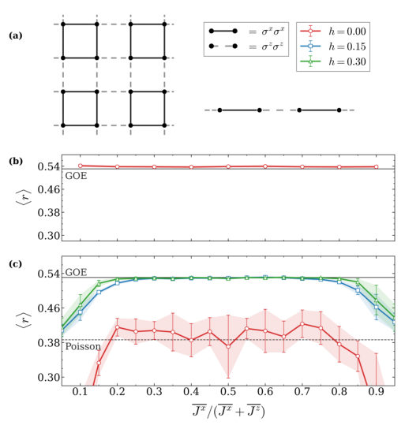
<figcaption class="paper-figure-caption"><b>Fig 1.</b> FIG. 1. (a) Diagrams illustrating the models of Eq. 1 and Eq. 2 with extensively many mutually incompatible local sym- metries (abbreviated to EMICQ in main text). (b) Average gap ratio ⟨r⟩for the 16-site checkerboard model (Eq. 1) with bond disorder over 30 realizations within a randomly chosen (anticommuting) symmetry sector. The Gaussian orthogonal ensemble (GOE) value is observed over the full range of Jx/Jz indicating robust non-integrability. (c) ⟨r⟩for Eq. 3 averaged over fifteen disordered realizations and shown vs. Jx</figcaption>
</figure>
<figure class="paper-figure-card">
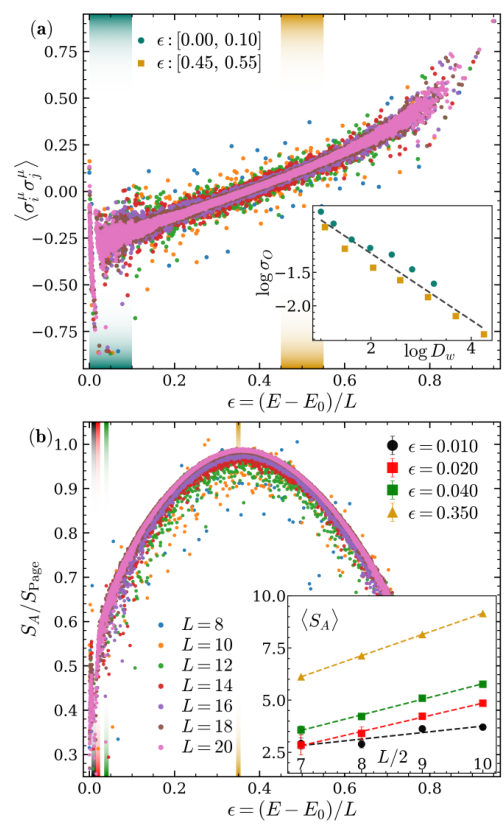
<figcaption class="paper-figure-caption"><b>Fig 2.</b> FIG. 2. (a) Distribution of local observable matrix elements ⟨E| ˆO|E⟩versus (excitation) energy density ϵ = (E −E0)/L for Eq. 3 for h = 0.3 (marked by white triangle in Fig. 1). ˆO = σµ i σµ j for two randomly chosen sites above with µ chosen randomly in spin space. Here we use translational symmetry (k = 0 sector) to access bigger system sizes. Inset: scaling of their fluctuations vs. Dw in log-log in the spectral bulk and at the spectral edge. The ϵ windows used to measure the fluctuations are given in the inset legend. The expected √Dw behavior is shown for comparison as a dotted line. (b) Distribution of half-chain EE normalized to the Page limit  L</figcaption>
</figure>
<figure class="paper-figure-card">
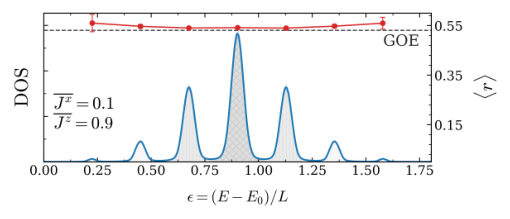
<figcaption class="paper-figure-caption"><b>Fig 3.</b> FIG. 3. In the limit when one set of checkerboard couplings dominates the other in Eq. 1, the many-body density of states splits into lobes as shown. Also shown is the lobe-resolved ⟨r⟩ for a L = 16 system within a randomly chosen (anticommut- ing) symmetry sector. GOE statistics is seen in each lobe down to the lowest lobes.</figcaption>
</figure>
</div>

<p><strong>Summary.</strong> This work explores Eigenstate Thermalization Hypothesis (ETH) in quantum spin systems with extensive, incompatible symmetries. By analyzing 1D and 2D spin models, the authors show that these symmetries do not necessarily destroy thermalization. They demonstrate that ETH persists robustly near the spectral edge, suggesting a mechanism for achieving thermodynamic behavior even with minimal excitation energy.</p>
<p><strong>Why it may be interesting.</strong> The finding that incompatible symmetries can sustain thermalization deep into the spectral edge provides a powerful theoretical mechanism for understanding quantum thermalization in complex, highly constrained quantum materials.</p>
<details>
<summary>Detailed structure</summary>
<p><strong>Main problem.</strong> The paper investigates the Eigenstate Thermalization Hypothesis (ETH) in quantum systems possessing an extensive number of mutually incompatible local symmetries (EMICQ). It specifically addresses whether ETH remains valid near the spectral edge despite these symmetries.</p>
<p><strong>Main result.</strong> The study demonstrates that incompatible local symmetries allow non-integrability to persist and enable ETH behavior to remain operational deep into the many-body spectral edge, even with minimal excitation energy.</p>
<p><strong>Method.</strong> The authors use spectral diagnostics, analyzing the average gap ratio, entanglement entropy scaling, and fluctuations of local observables across different energy windows.</p>
<p><strong>Model / system.</strong> The models studied are bond-dependent Z2-symmetric quantum spin-1/2 Hamiltonians, including a 2D checkerboard model and a 1D chain. These models are engineered to exhibit the EMICQ structure.</p>
<p><strong>Key observables.</strong> Mean Entanglement Entropy (EE), average gap ratio $\langle r 
angle$, fluctuations of local observable matrix elements ($ ext{Dm}_    ext{w}$), and the energy density $\epsilon$.</p>
<p><strong>Important parameters / regimes.</strong> The analysis focuses on the spectral edge ($\epsilon 	o 0^+$) versus the spectral bulk, and compares integrable versus non-integrable regimes.</p>
<p><strong>Assumptions / limitations.</strong> The analysis relies on identifying and excluding 'outlier states' whose presence distorts the scaling laws, and for the 2D case, assumes local fluxes can be approximately conserved.</p>
<p><strong>Figures summary.</strong> Figures show GOE behavior in gap ratios for non-integrable models, volume-law growth of EE near the spectral edge, and finite-size scaling consistent with ETH for local observable fluctuations.</p>
<p><strong>Paper structure.</strong> The paper progresses by first establishing the theoretical framework concerning EMICQ and ETH breakdown. It then applies this framework to specific 1D and 2D spin models, using spectral diagnostics (gap ratios, EE scaling) to confirm the persistence of thermalization near the spectral edge.</p>
</details>
<details>
<summary>Abstract</summary>
<p>It is well-known that thermalization breaks down in presence of an extensive number of symmetries or conservation laws that are mutually compatible or commuting with each other. We ask here how an extensive number of mutually incompatible local symmetries govern eigenstate thermalization (ETH). We will investigate this through models within the class of bond-dependent $\mathbb{Z}_2$-symmetric quantum spin-$\frac{1}{2}$ Hamiltonians that naturally admit this structure. This leads to exponentially large degeneracies in the spectrum governed by the incompatible symmetry structure. Here, using spectral diagnostics, we show that non-integrability can survive despite extensively many conserved quantities when they are incompatible. Furthermore, we show that ETH behavior persists deep into the many-body spectral edge due to this structure. In other words, incompatible local symmetries enable a mechanism to obtain enough thermodynamic entropy at low excitation energy densities to make ETH operational or predictive near the ground state.</p>
</details>
<p><sub><a href="#top">↑ back to top</a></sub></p>

<p><a id="paper-2609.39401"></a></p>
<h3 id="square-root-growth-of-operator-entanglement-in-an-integrable-brickwork-circuit"><a href="http://arxiv.org/abs/2609.39401v1">Square-root growth of operator entanglement in an integrable brickwork circuit</a></h3>
<p><strong>Authors:</strong> Balázs Pozsgay<br>
<strong>Type:</strong> theory · <strong>Category:</strong> statistical mechanics · <strong>PDF:</strong> <a href="https://arxiv.org/pdf/2609.39401v1">https://arxiv.org/pdf/2609.39401v1</a><br>
<strong>Analysis basis:</strong> full PDF text, analyzed in chunks
<strong>Topic relevance:</strong> <code>methods for driven-dissipative</code> <strong>3/5</strong> · <code>analog quantum simulation</code> <strong>1/5</strong> · <code>non-equilibrium universality</code> <strong>1/5</strong> · <code>scars &amp; prethermalization</code> <strong>1/5</strong></p>
<div class="figure-strip-hint">↔ Scroll figures horizontally</div>
<div class="paper-figures-scroll">
<figure class="paper-figure-card">
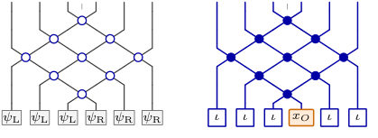
<figcaption class="paper-figure-caption"><b>Fig 1.</b> FIG. 2. Entangling rectangles for t = 3. (a) The state problem, with incoming packets prepared in ψL and ψR. (b) The folded operator problem, with identity inputs ι and the local source xO. Hollow and filled vertices denote R and bR, respectively. In both panels the dashed line marks the outgoing packet cut.</figcaption>
</figure>
</div>

<p><strong>Summary.</strong> This work investigates the entanglement growth of local operators in an integrable quantum circuit, demonstrating that the entanglement scales superlogarithmically ($\propto \sqrt{t}$) rather than the expected logarithmic rate. By constructing a specific integrable model, the authors show that simulating the time evolution requires an exponentially growing bond dimension, challenging current theoretical bounds on entanglement in such systems.</p>
<p><strong>Why it may be interesting.</strong> It provides a concrete counterexample to a major conjecture in the field of integrable quantum systems, showing that entanglement scaling can be much faster than previously thought, which has implications for understanding quantum thermalization and complexity.</p>
<details>
<summary>Detailed structure</summary>
<p><strong>Main problem.</strong> The paper challenges the long-standing expectation that operator entanglement in integrable many-body systems grows at most logarithmically with time.</p>
<p><strong>Main result.</strong> The von Neumann operator entropy grows superlogarithmically, specifically as $\sqrt{t}$, and the required bond dimension for MPO simulation grows exponentially as $\exp(c\sqrt{t})$.</p>
<p><strong>Method.</strong> The analysis uses the 'folding trick' to map Heisenberg evolution to Schrödinger evolution, employing techniques from tensor networks and asymptotic analysis (Central Limit Theorem) to bound entanglement measures.</p>
<p><strong>Model / system.</strong> The model is a four-state brickwork circuit on an infinite chain, governed by a specific permutation matrix gate that ensures Yang-Baxter integrability.</p>
<p><strong>Key observables.</strong> Von Neumann operator entropy ($S_{	ext{op}, 1}$), Rényi entropies ($S_{	ext{op}, \alpha}$), and the required bond dimension ($\chi(t)$) for MPO simulation.</p>
<p><strong>Important parameters / regimes.</strong> Time ($t$), Rényi index ($\alpha$), and the bond dimension $\chi$.</p>
<p><strong>Assumptions / limitations.</strong> The analysis assumes the system size $L 	o \infty$ at fixed time $t$, and the MPO bound relies on the Central Limit Theorem for the count imbalance.</p>
<p><strong>Figures summary.</strong> Figures illustrate the braid representation of the circuit, the setup for state/operator entanglement across a cut, and the entanglement structure.</p>
<p><strong>Paper structure.</strong> The paper progresses by first analyzing state entanglement, then developing the 'folding trick' to tackle operator entanglement, deriving the $\sqrt{t}$ scaling for entropy, and finally establishing the exponential lower bound on the MPO bond dimension.</p>
</details>
<details>
<summary>Abstract</summary>
<p>It is widely expected that the von Neumann entanglement of a local operator grows at most logarithmically in integrable many-body systems in infinite volume. We give a counterexample in a four-state brickwork circuit whose gate is a permutation matrix solving the constant Yang--Baxter equation. The von Neumann operator entropy grows as $(\log2)\sqrt{t/π}+O(\log t)$, whereas fixed-index Rényi entropies grow linearly below index one and logarithmically above it. At fixed relative Hilbert--Schmidt error below one, matrix product operator simulations require a bond dimension growing at least as $\exp(c\sqrt t)$ for some $c>0$.</p>
</details>
<p><sub><a href="#top">↑ back to top</a></sub></p>

<p><a id="paper-2609.39935"></a></p>
<h3 id="a-few-constrain-many-correlation-enhanced-learning-of-many-body-quantum-systems"><a href="http://arxiv.org/abs/2609.39935v1">A Few Constrain Many: Correlation-Enhanced Learning of Many-Body Quantum Systems</a></h3>
<p><strong>Authors:</strong> Matteo Tedde, Davide Girolami<br>
<strong>Type:</strong> theory · <strong>Category:</strong> quantum information and computing · <strong>PDF:</strong> <a href="https://arxiv.org/pdf/2609.39935v1">https://arxiv.org/pdf/2609.39935v1</a><br>
<strong>Analysis basis:</strong> full PDF text, analyzed in chunks
<strong>Topic relevance:</strong> <code>quantum measurements</code> <strong>3/5</strong> · <code>analog quantum simulation</code> <strong>2/5</strong></p>
<div class="figure-strip-hint">↔ Scroll figures horizontally</div>
<div class="paper-figures-scroll">
<figure class="paper-figure-card">
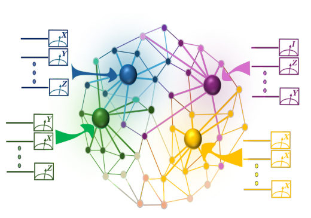
<figcaption class="paper-figure-caption"><b>Fig 1.</b> FIG. 1. Measuring a small number of Pauli observables (here depicted as the biggest vertices in a connected network)–in fact, even a single Pauli coefficient–carries information about an exponential number of unobserved Pauli strings (the rest of the network). The strength of such correlations is quantified by a set of inequalities. Extremal expectation values (±1) are more informative, as they yield tighter bounds to unmeasured quantities. An experimentally convenient choice is to directly measure a set of commuting Pauli observables, as they share a common eigenbasis, i.e., a single preparation circuit. Ad- ditional prior information about the scrutinized system, e.g., spatial symmetries...</figcaption>
</figure>
<figure class="paper-figure-card">
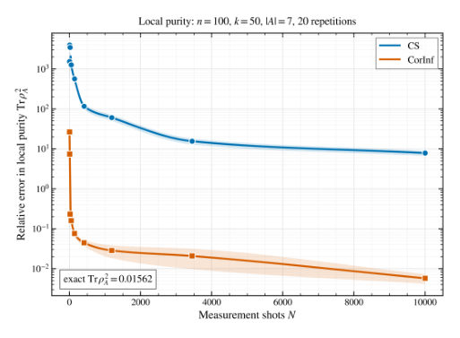
<figcaption class="paper-figure-caption"><b>Fig 2.</b> FIG. 2. Relative error of the local purity estimation for a 100-qubit rotated cluster state, with k = 50 rotated vertices and |A| = 7. CS uses uniform local Pauli settings, while CorInf uses the adaptive CorInf distribution and the plug-in bound projection of Appendix C 2 b. Each point is the mean of 20 repetitions; the shaded band is the standard error of the mean.</figcaption>
</figure>
<figure class="paper-figure-card">
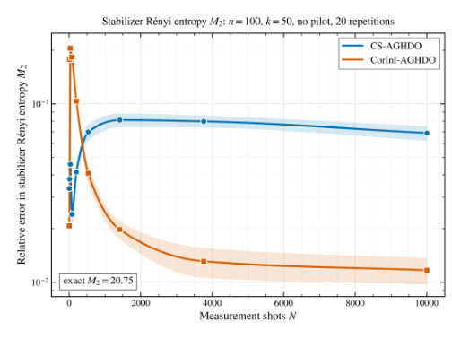
<figcaption class="paper-figure-caption"><b>Fig 3.</b> FIG. 3. Relative error of the stabilizer R´enyi entropy for a 100-qubit rotated cluster state with k = 50 rotated vertices. CS-AGHDO and CorInf-AGHDO use the same AGHDO esti- mator; only the measurement distribution differs. Each point is the mean of 20 repetitions; the shaded band is the standard error of the mean.</figcaption>
</figure>
</div>

<p><strong>Summary.</strong> This paper introduces correlation-enhanced learning algorithms to overcome the exponential scaling challenge in characterizing large quantum systems. By exploiting the mathematical constraints imposed by correlations between measured Pauli observables, the authors develop adaptive measurement strategies. These methods significantly improve the accuracy of estimating key quantum resources like entanglement and purity compared to standard tomography techniques.</p>
<p><strong>Why it may be interesting.</strong> This work provides a concrete, resource-efficient framework for quantum state tomography and resource estimation that is directly applicable to NISQ devices by minimizing the required number of entangling gates.</p>
<details>
<summary>Detailed structure</summary>
<p><strong>Main problem.</strong> Characterizing the properties of large many-body quantum systems is computationally intractable due to the exponential number of parameters required for full state tomography.</p>
<p><strong>Main result.</strong> By leveraging the correlations among a polynomial number of measured Pauli observables, the estimation of exponentially many unmeasured quantum quantities can be achieved with significantly lower relative error than existing methods.</p>
<p><strong>Method.</strong> The authors propose correlation-informed (CorInf) learning algorithms that adaptively select measurements based on theoretical bounds derived from Pauli operator commutation and anti-commutation relations.</p>
<p><strong>Model / system.</strong> The work is general for many-body quantum systems, demonstrated on systems up to 100 qubits, and specifically tested on 2D cluster states and rotated families of states.</p>
<p><strong>Key observables.</strong> Entanglement, local purity, stabilizer Rényi-2 entropy, and expectation values of Pauli observables ($\mu_P$).</p>
<p><strong>Important parameters / regimes.</strong> The measurement budget (number of Pauli strings measured) and the relative error achieved compared to standard methods.</p>
<p><strong>Assumptions / limitations.</strong> The protocols assume the measurement of Pauli observables and rely on deriving rigorous algebraic bounds from correlation information.</p>
<p><strong>Figures summary.</strong> Figures compare the relative error of local purity and stabilizer Rényi entropy estimation using CorInf versus standard Classical Shadows (CS) and Neural-State methods (AGHDO), showing significant performance improvements for CorInf.</p>
<p><strong>Paper structure.</strong> The paper builds from establishing theoretical bounds on information propagation using Pauli correlations (Appendix A/B) to developing adaptive measurement protocols (Appendix C) and finally demonstrating superior performance in estimating key quantum resources (Purity/Entropy) compared to non-adaptive methods.</p>
</details>
<details>
<summary>Abstract</summary>
<p>Discovering properties of many-body quantum systems is challenging because of the large number of parameters to determine. Here, we show that correlations among quantum observables help reduce the complexity of quantum learning. A polynomial number of selected measurements can bound the values of exponentially many dependent yet unmeasured quantities, enabling efficient estimation of general functions of quantum states. We leverage this result to design correlation-informed learning algorithms that estimate key quantum resources, such as entanglement and magic, in systems of 100 qubits. They achieve a lower relative error than shadow tomography and neural-state methods by using information about a polynomial number of measured Pauli strings. These protocols are readily testable with today's quantum computers, as they do not require premeasurement entangling gates. Quantum constraints themselves are therefore a resource for exploring large quantum systems.</p>
</details>
<p><sub><a href="#top">↑ back to top</a></sub></p>

<p><a id="paper-2609.40022"></a></p>
<h3 id="css-codes-for-quantum-metrology-with-discrete-time-error-correction"><a href="http://arxiv.org/abs/2609.40022v1">CSS codes for Quantum Metrology with Discrete-time Error Correction</a></h3>
<p><strong>Authors:</strong> Ugnė Liaubaitė, Debora Ramacciotti, Robert Raußendorf<br>
<strong>Type:</strong> theory · <strong>Category:</strong> quantum information and computing · <strong>PDF:</strong> <a href="https://arxiv.org/pdf/2609.40022v1">https://arxiv.org/pdf/2609.40022v1</a><br>
<strong>Analysis basis:</strong> full PDF text, analyzed in chunks
<strong>Topic relevance:</strong> <code>quantum measurements</code> <strong>3/5</strong> · <code>methods for driven-dissipative</code> <strong>2/5</strong></p>
<div class="figure-strip-hint">↔ Scroll figures horizontally</div>
<div class="paper-figures-scroll">
<figure class="paper-figure-card">
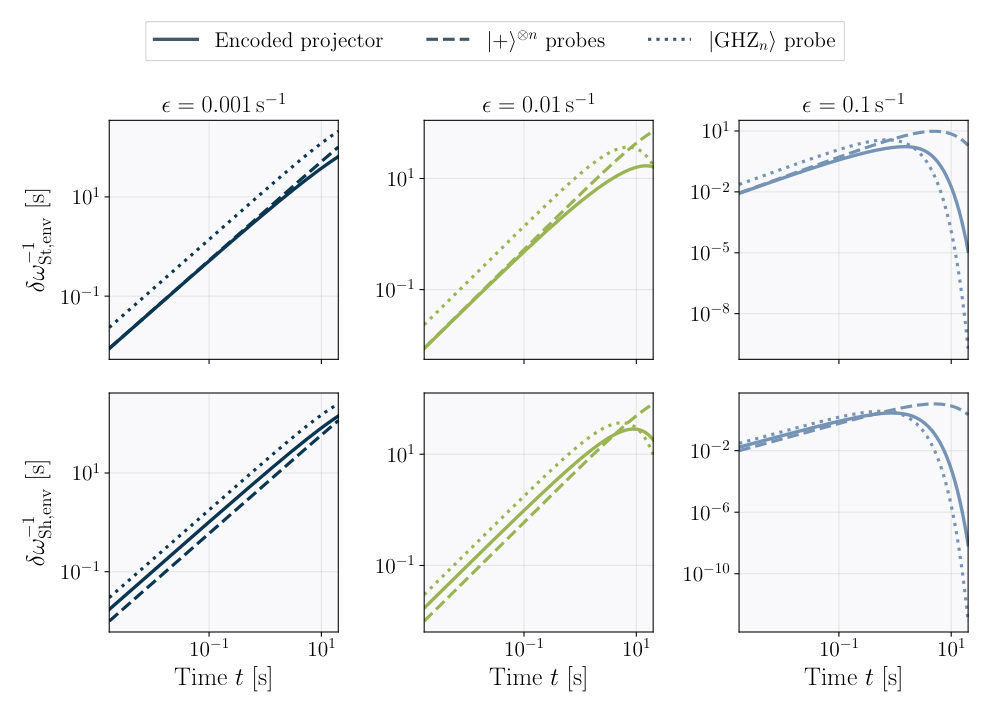
<figcaption class="paper-figure-caption"><b>Fig 1.</b> FIG. 1. Envelope of the frequency sensitivity under uncorrected Z noise. Rows correspond to the Steane and Shor codes and columns to different values of the noise strength γ. Solid, dashed, and dotted lines denote the encoded projector protocol, n independent |+⟩probes, and the n-qubit GHZ probe, respectively. The notation ϵ used in the figure corresponds to the noise strength, ϵ = γ.</figcaption>
</figure>
<figure class="paper-figure-card">
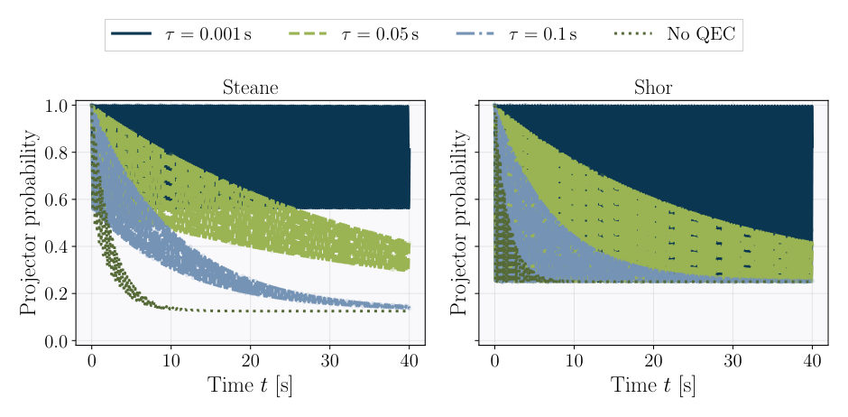
<figcaption class="paper-figure-caption"><b>Fig 2.</b> FIG. 2. Projector probability PX(ω, t) under discrete X-error correction for the Steane code (left) and the Shor code (right), for different correction intervals τ at ω = 3. The dense appearance reflects the rapid parameter-dependent oscillations.</figcaption>
</figure>
<figure class="paper-figure-card">
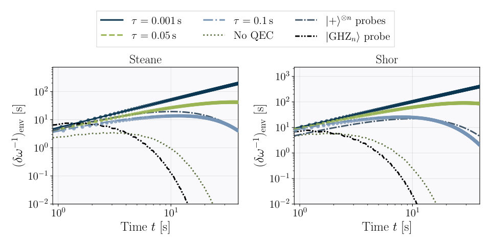
<figcaption class="paper-figure-caption"><b>Fig 3.</b> FIG. 3. Frequency-sensitivity envelopes under discrete X-error correction for the Steane code (left) and the Shor code (right). Colored markers denote the exact local maxima of δω−1, while the corresponding continuous curves show the fitted two-factor envelope given by Eq. (C23). The uncorrected encoded protocol and the GHZ probe are included as analytical benchmarks and are not part of the fit.</figcaption>
</figure>
<figure class="paper-figure-card">
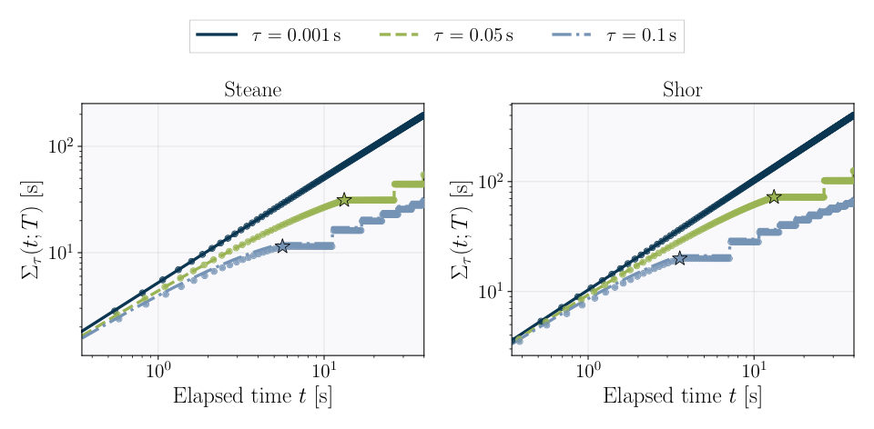
<figcaption class="paper-figure-caption"><b>Fig 4.</b> FIG. 4. Crossover from the Heisenberg-like to the SQL-like regime under discrete X-error correction for the Steane code (left) and the Shor code (right), for different correction intervals τ. The interrogation time topt(T) is optimized for the fixed final budget T. Colored dots show the numerical results, while solid curves show the fitted two-factor envelope. Beyond topt, the protocol is repeated at fixed interrogation time, producing the staircase behavior. Stars mark the numerically determined topt(T).</figcaption>
</figure>
<figure class="paper-figure-card">
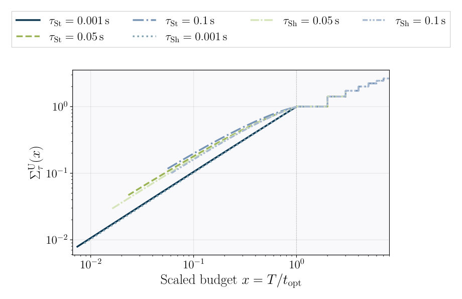
<figcaption class="paper-figure-caption"><b>Fig 5.</b> FIG. 5. Rescaled discrete-QEC sensitivity. The sensing-time budget is normalized by the numerically determined topt, and the sensitivity is normalized by its value at topt.</figcaption>
</figure>
</div>

<p><strong>Summary.</strong> This work analyzes quantum metrology protocols using CSS codes to estimate parameters with high precision despite environmental noise. By implementing discrete-time error correction, the authors show that the Heisenberg scaling advantage is maintained over a finite time window. The findings provide a detailed theoretical understanding of the trade-off between noise suppression and the ultimate achievable measurement precision.</p>
<p><strong>Why it may be interesting.</strong> The explicit analysis of error correction protocols in the context of quantum sensing provides concrete, mathematically rigorous guidelines for designing robust quantum measurements, which is highly relevant for experimental quantum optics and AMO platforms.</p>
<details>
<summary>Detailed structure</summary>
<p><strong>Main problem.</strong> The paper addresses how to maintain the Heisenberg scaling advantage in quantum metrology when noise is present, requiring the implementation of quantum error correction.</p>
<p><strong>Main result.</strong> Discrete-time error correction using CSS codes successfully preserves Heisenberg-like temporal scaling over a finite interrogation-time window, although asymptotic scaling is limited by residual decay.</p>
<p><strong>Method.</strong> The authors develop an analytical framework to model the noisy evolution using the Lindblad master equation and analyze the effect of discrete-time error correction cycles on the projector probability.</p>
<p><strong>Model / system.</strong> The system is a quantum sensing protocol using Calderbank-Shor-Steane (CSS) codes to estimate an unknown parameter via a local Z Hamiltonian. Noise is modeled as perpendicular X-type noise, and the dynamics are analyzed using the Lindblad equation.</p>
<p><strong>Key observables.</strong> Classical Fisher Information ($F_C$), sensitivity ($\delta\omega^{-1}$), and the projector probability $P_X(\omega, t)$.</p>
<p><strong>Important parameters / regimes.</strong> Noise strength ($\gamma$), correction frequency ($   au$), interrogation time ($t$), and the code parameters ($[[n, k, d]]$).</p>
<p><strong>Assumptions / limitations.</strong> Error correction operations are assumed instantaneous and ideal; the analysis is restricted to a finite interrogation-time window.</p>
<p><strong>Figures summary.</strong> Figures compare sensitivity envelopes under varying noise and correction parameters, showing the crossover from Heisenberg-like to SQL-like scaling.</p>
<p><strong>Paper structure.</strong> The paper first establishes the metrological goal and the noisy dynamics. It then develops the framework for discrete-time error correction using CSS codes, deriving the evolution of the projector probability. Finally, it analyzes the resulting sensitivity envelope, determining the optimal interrogation time and crossover behavior.</p>
</details>
<details>
<summary>Abstract</summary>
<p>The goal of quantum metrology is to estimate an unknown parameter with better-than-classical precision and, ideally, to attain Heisenberg scaling. In realistic settings, however, noise can substantially reduce this advantage and, in many cases, restore standard-quantum-limit-like performance. Preserving the quantum enhancement therefore requires noise-robust strategies, which can be implemented using quantum error correction. In this work, we develop and analyze a quantum-metrology protocol based on Calderbank-Shor-Steane (CSS) codes. The main result is that, for noise perpendicular to the sensing Hamiltonian, discrete-time error correction preserves Heisenberg-like temporal scaling over a finite interrogation-time window whose duration depends on the correction frequency. It is further shown that recovery applied only after the sensing evolution provides no metrological advantage over the corresponding uncorrected noisy protocol in the setup considered here. An analytical framework is developed for arbitrary CSS codes and applied to the Steane and Shor codes, for which the discrete-time corrected dynamics, the Heisenberg-like-to-SQL-like crossover, and the optimal interrogation time are determined and numerically analysed.</p>
</details>
<p><sub><a href="#top">↑ back to top</a></sub></p>

<p><a id="paper-2609.40209"></a></p>
<h3 id="designing-strongly-correlated-quantum-phases-of-matter-with-foundation-neural-network-quantum-states"><a href="http://arxiv.org/abs/2609.40209v1">Designing Strongly Correlated Quantum Phases of Matter with Foundation Neural-Network Quantum States</a></h3>
<p><strong>Authors:</strong> Alessandro Sinibaldi, Luciano Loris Viteritti, Riccardo Rende, Federico Becca, Giuseppe Carleo<br>
<strong>Type:</strong> theory · <strong>Category:</strong> disordered systems and neural networks · <strong>PDF:</strong> <a href="https://arxiv.org/pdf/2609.40209v1">https://arxiv.org/pdf/2609.40209v1</a><br>
<strong>Analysis basis:</strong> full PDF text, analyzed in chunks
<strong>Topic relevance:</strong> <code>analog quantum simulation</code> <strong>3/5</strong> · <code>methods for driven-dissipative</code> <strong>2/5</strong></p>
<div class="figure-strip-hint">↔ Scroll figures horizontally</div>
<div class="paper-figures-scroll">
<figure class="paper-figure-card">
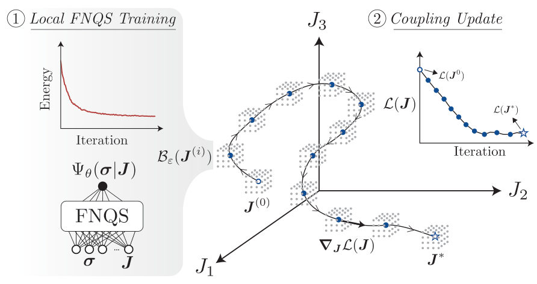
<figcaption class="paper-figure-caption"><b>Fig 1.</b> Figure 1. FNQS Inverse Model Design. Sketch of the framework for inverse model design through FNQS. The trajectory in the central panel illustrates the evolution of the couplings J, from an initial guess J(0) (open circle) to the optimal model J ∗(star), as the target property L is minimized. Each iteration consists of the two stages described in the text. (1) Local FNQS Training. At the current iterate J(i), the variational wave function Ψθ(σ|J), which depends on both the many-body configuration σ and the couplings J, is optimized by VMC to represent the ground states of the Hamiltonians within the hypercube Bε(J (i)) (grey points along the trajectory), by minimizing the average energy of...</figcaption>
</figure>
<figure class="paper-figure-card">
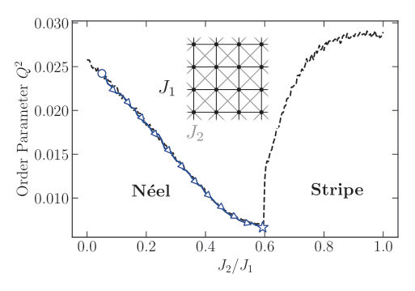
<figcaption class="paper-figure-caption"><b>Fig 2.</b> Figure 2. J1-J2 Heisenberg Model. Inverse design of a nonmagnetic phase in the frustrated J1-J2 Heisenberg model of Eq. (8) with a single free coupling J2, on a 12 × 12 lattice. The dashed black line shows the Edwards-Anderson order pa- rameter Q2, evaluated over the whole range 0 ≤J2/J1 ≤1 by a global FNQS calculation, which provides the reference landscape. The N´eel and stripe phases are explicitly indi- cated. The blue trajectory shows the coupling optimization, started from the N´eel phase at J2/J1 = 0.05 (open circle) and converging to the minimum of Q2 at J2/J1 ≈0.6 (star), within the nonmagnetic window where the QSL is expected; the arrowheads indicate the direction of the...</figcaption>
</figure>
<figure class="paper-figure-card">
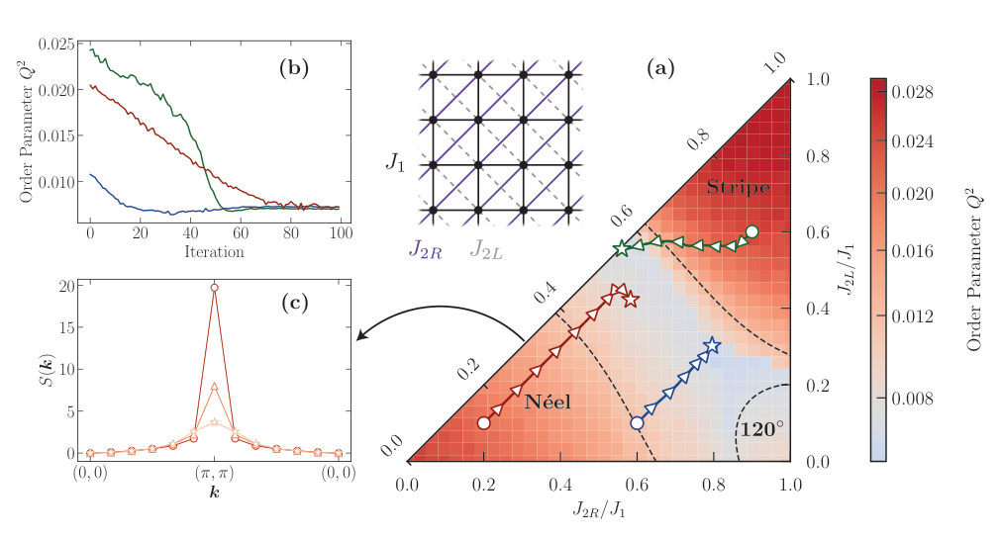
<figcaption class="paper-figure-caption"><b>Fig 3.</b> Figure 3. Generalized J1-J2 Heisenberg Model. Inverse design of nonmagnetic phases in the generalized frustrated Heisenberg model of Eq. (9), with two independent next-nearest-neighbor couplings J2R and J2L, on a 12 × 12 lattice. (a) Edwards-Anderson order parameter Q2, evaluated over the region 0 ≤J2L/J1 ≤J2R/J1 ≤1 by a global FNQS calculation, which provides the reference landscape; the complementary half of the phase diagram follows from the symmetry J2R ↔J2L. Dashed lines give an indicative estimate of the extent of the N´eel, stripe, and 120◦ordered phases, identified from the peaks of the structure factor at k = (π, π), (π, 0) and (0, π), and ±(2π/3, 2π/3), respectively; each boundary...</figcaption>
</figure>
<figure class="paper-figure-card">
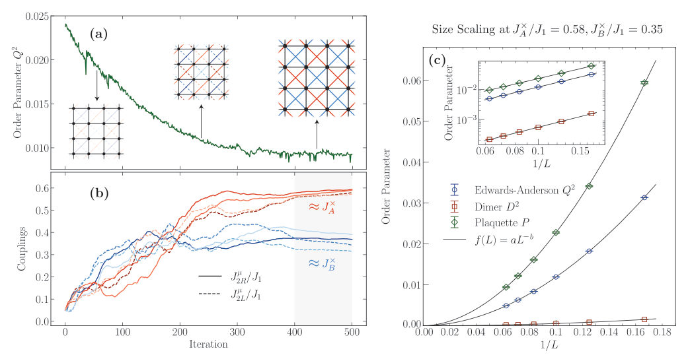
<figcaption class="paper-figure-caption"><b>Fig 4.</b> Figure 4. J1-J2 Heisenberg Model with 2 × 2 Unit Cell. Inverse design of nonmagnetic phases in the frustrated Heisenberg model of Eq. (10) with eight independent next-nearest-neighbor couplings {Jµ 2R, Jµ 2L}4 µ=1 within a 2 × 2 unit cell. (a) Minimization of the Edwards-Anderson order parameter Q2 on a 12 × 12 lattice, starting from all eight couplings equal to Jµ 2R = Jµ 2L = 0.05, deep in the N´eel phase. The snapshots show the model at three stages of the optimization, with distinct colors identifying the independent couplings and color intensity encoding their magnitudes. (b) Evolution of the eight couplings along the same optimization, with solid lines for Jµ 2R/J1 and dashed lines...</figcaption>
</figure>
</div>

<p><strong>Summary.</strong> This work introduces a novel inverse design framework using Foundation Neural-Network Quantum States (FNQS) to solve the challenge of finding Hamiltonians that realize specific quantum properties. By treating the Hamiltonian couplings as optimization variables, the authors successfully located a new quantum spin liquid candidate in the frustrated Heisenberg model. This method represents a significant advance in computationally exploring the phase diagrams of strongly correlated materials.</p>
<p><strong>Why it may be interesting.</strong> The methodology provides a powerful, automated way to explore the vast parameter space of frustrated quantum magnets, potentially discovering new exotic phases without relying on prior physical intuition about the Hamiltonian structure.</p>
<details>
<summary>Detailed structure</summary>
<p><strong>Main problem.</strong> The core problem is solving the inverse design problem: determining the microscopic Hamiltonian couplings required for a quantum system to exhibit a desired target property.</p>
<p><strong>Main result.</strong> The authors successfully used their framework to find a novel quantum spin liquid candidate—the J1-J2-delta model—by optimizing couplings in a search space of eight parameters.</p>
<p><strong>Method.</strong> They employ a general framework using Foundation Neural-Network Quantum States (FNQS) to encode the ground states of a family of Hamiltonians. The search is reduced to gradient-based optimization in the coupling space, minimizing a target observable.</p>
<p><strong>Model / system.</strong> The study focuses on strongly correlated quantum spin systems, specifically frustrated Heisenberg models on the square lattice, parameterized by various couplings (e.g., J1, J2, and diagonal couplings).</p>
<p><strong>Key observables.</strong> The primary target observable for finding QSL candidates is the Edwards-Anderson order parameter ($Q_2$), which must approach zero in the thermodynamic limit.</p>
<p><strong>Important parameters / regimes.</strong> The search space involves up to eight independent couplings within a $2	imes2$ unit cell, and the analysis involves finite-size scaling up to $16	imes16$ clusters.</p>
<p><strong>Assumptions / limitations.</strong> The optimization is constrained by the variational nature of the state, and the method relies on the assumption that the target property is a differentiable function of the couplings.</p>
<p><strong>Figures summary.</strong> Figure 1 illustrates the iterative FNQS Inverse Model Design framework, showing the cycle of local state training followed by gradient-based coupling updates.</p>
<p><strong>Paper structure.</strong> The paper outlines the inverse design framework, detailing the use of FNQS to parameterize the Hamiltonian couplings. It then applies this framework to search for nonmagnetic phases in frustrated Heisenberg models, demonstrating convergence to a specific, previously uncharacterized model.</p>
</details>
<details>
<summary>Abstract</summary>
<p>Designing a material with a desired property amounts to solving an inverse problem: finding the couplings of a microscopic Hamiltonian whose ground state exhibits that property. For strongly correlated quantum systems, solving this problem efficiently remains largely out of reach. To address this challenge, we present a general framework for ab initio inverse design based on Foundation Neural-Network Quantum States, a recent approach in which the ground states of a family of Hamiltonians are encoded in a single variational wave function. Because the ansatz depends explicitly on the couplings, any target property is a differentiable function of them, and the search for the right Hamiltonian reduces to gradient-based optimization in coupling space. We apply this approach to search for nonmagnetic phases of frustrated Heisenberg models on the square lattice with an increasing number of free next-nearest-neighbor couplings, aiming to identify new quantum spin liquid candidates. With a single coupling, the method recovers the known nonmagnetic window of the square $J_1$-$J_2$ Heisenberg model, whereas letting the two diagonal couplings vary independently reveals an extended nonmagnetic region connecting the square-lattice and anisotropic-triangular-lattice regimes. In a search space of eight independent couplings within a $2\times2$ unit cell, which contains several paradigmatic frustrated spin models, the optimization spontaneously converges to the $J_1$-$J_2$-$δ$ Heisenberg model, in which the diagonal couplings alternate between two values on neighboring plaquettes, a model recently proposed in the context of altermagnetism. Finite-size scaling up to $16\times16$ clusters in this optimal model shows that the ground state has no magnetic, dimer, or plaquette order, establishing it as a new quantum spin liquid candidate, distinct from those previously proposed on the square lattice.</p>
</details>
<p><sub><a href="#top">↑ back to top</a></sub></p>

<p><a id="paper-2609.39831"></a></p>
<h3 id="dynamic-distributed-quantum-sensing-of-radio-frequency-fields-via-time-bin-entanglement"><a href="http://arxiv.org/abs/2609.39831v1">Dynamic distributed quantum sensing of radio-frequency fields via time-bin entanglement</a></h3>
<p><strong>Authors:</strong> Vedansh Nehra, Richard Birrittella, Benjamin Malia, Nicholas J. Barton, Christopher Tison, James Schneeloch, David Hucul, Benjamin Kyle, Erin Sheridan<br>
<strong>Type:</strong> theory · <strong>Category:</strong> quantum information and computing · <strong>PDF:</strong> <a href="https://arxiv.org/pdf/2609.39831v1">https://arxiv.org/pdf/2609.39831v1</a><br>
<strong>Analysis basis:</strong> full PDF text, analyzed in chunks
<strong>Topic relevance:</strong> <code>quantum measurements</code> <strong>3/5</strong> · <code>interference shaping light</code> <strong>2/5</strong></p>
<div class="figure-strip-hint">↔ Scroll figures horizontally</div>
<div class="paper-figures-scroll">
<figure class="paper-figure-card">
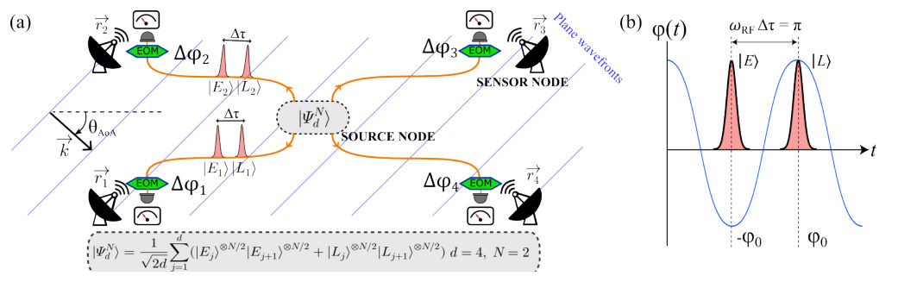
<figcaption class="paper-figure-caption"><b>Fig 1.</b> FIG. 1. (a) Simplified network diagram. An incident RF field, with angle of arrival θAoA of its wave-vector ⃗k with respect to the sensor baseline, is sensed by four sensor nodes at positions ⃗rj. A time-bin Bell state (here for N = 2 , d = 4) is distributed from a central source node to the four remote sensor nodes. Electro-optic modulator (EOM)-based RF-to-optical transduction imprints the local RF field phase ψj onto the probe state before measurement, inducing an optical phase shift ∆φj. (b) Coherent sampling of the RF waveform using an Early-Late time-bin separation ∆τ.</figcaption>
</figure>
<figure class="paper-figure-card">

<figcaption class="paper-figure-caption"><b>Fig 2.</b> FIG. 2. Proposed network architecture operating at baseband. (a) The source node generates a polarization Bell state via a standard Sagnac interferometer, then converts it to the time-bin basis. An antenna is included to establish an absolute phase reference for the RF signal of interest. In this scenario, the RF signal is mixed with a local oscillator (LO). The baseband intermediate frequency signal is routed to an analog to digital converter (ADC), which is used to trigger an acousto-optic modulator (AOM) to meet the quadrature locking condition, and a phase-locked loop is used to stabilize the RF phase as needed. Output signal and idler time-bin photons each impinge upon a beamsplitter,...</figcaption>
</figure>
<figure class="paper-figure-card">

<figcaption class="paper-figure-caption"><b>Fig 3.</b> FIG. 3. Metrology of the phase-difference observable using |Ψ−⟩at φ0 = 0.1. (a) Standard deviation of the phase-difference estimator versus interference visibility V for Nc = 1000. (b) Standard deviation versus the number of coincidence events Nc at V = 0.9 for time-bin (purple) and polarization (red) encodings. The time-bin curve sits 6 dB below the polarization curve due to the antipodal sub-cycle sampling advantage. Markers denote empirical Monte Carlo results over R = 1, 000 trials. Standard errors on the sample standard deviation are smaller than the marker size. CRB: Cram´er–Rao Bound; MC: Monte Carlo; SQL: standard quantum limit. (c) Standard deviation versus the common-mode phase...</figcaption>
</figure>
<figure class="paper-figure-card">

<figcaption class="paper-figure-caption"><b>Fig 4.</b> FIG. 4. The cost of RF-to-optical transduction. The gray baseline curve is the SQL for separable operation with polar- ization Bell states and φ0 = 0.1. The blue curve also corre- sponds to a modulation depth of φ0 = 0.1 for entangled time- bin operation, which was used in Fig. 3. If the modulation depth is reduced by a factor of 10, the standard deviation jumps by 20 dB (green curve, another jump for the orange curve). The reduction in precision can be offset somewhat by order-of-magnitude increases in the number Nc of two-photon coincidence events.</figcaption>
</figure>
</div>

<p><strong>Summary.</strong> This paper introduces a novel quantum sensing framework for measuring dynamic RF fields by replacing polarization qubits with time-bin entangled qubits. By exploiting the time-bin structure as a differential sampling reference, the protocol coherently maps dynamic RF phases onto static optical phases. The theoretical results demonstrate a significant sensitivity enhancement, making it a promising tool for quantum-enhanced distributed sensor arrays.</p>
<p><strong>Why it may be interesting.</strong> This work directly advances the application of quantum resources (entanglement, time-bin encoding) to practical measurement tasks (RF sensing), providing concrete metrics (6 dB enhancement) for quantum advantage in quantum networks.</p>
<details>
<summary>Detailed structure</summary>
<p><strong>Main problem.</strong> The paper addresses the need for a quantum sensing protocol capable of measuring dynamic radio-frequency (RF) fields, overcoming the limitations of static measurements inherent in traditional polarization-based quantum probes.</p>
<p><strong>Main result.</strong> The proposed time-bin entanglement protocol achieves a 6 dB sensitivity enhancement over static polarization encodings while retaining the 3 dB entanglement advantage over the standard quantum limit.</p>
<p><strong>Method.</strong> The method utilizes time-bin entangled qubits, where the intrinsic temporal structure acts as a built-in, tunable two-time differential sampling reference for RF phase measurement.</p>
<p><strong>Model / system.</strong> The system is based on discrete-variable (DV) photonic quantum networks employing time-bin entangled qubits. Sensing involves mapping the dynamic RF phase onto a relative optical phase between the early and late time-bin modes via an electro-optic modulator (EOM).</p>
<p><strong>Key observables.</strong> The relative phase $\Delta\varphi_j$ between the early and late time-bin modes, and the resulting two-photon correlator phase $\Theta(\Psi)_{ij}$ used for RF phase estimation.</p>
<p><strong>Important parameters / regimes.</strong> Time-bin separation ($\Delta	au$), RF carrier phase ($\psi_j$), and the modulation depth ($\varphi_0$). The optimal sampling condition is setting $\Delta	au$ to match the RF or IF half-period (antipodal sampling).</p>
<p><strong>Assumptions / limitations.</strong> The analysis relies on theoretical derivations, including the use of the small-phase approximation initially, and assumes efficient microwave-optical transduction.</p>
<p><strong>Figures summary.</strong> Figure 1 illustrates the network setup using time-bin Bell states for RF sensing. Figure 2 details the architecture, showing the conversion from polarization to the time-bin basis at the sensor nodes.</p>
<p><strong>Paper structure.</strong> The paper develops the theoretical framework by first defining the time-bin encoding, deriving the relative phase acquisition equations, and then calculating the quantum Fisher Information (QFI) for various sensing observables (sum vs. difference phase). Finally, it applies this framework to estimate the Angle of Arrival (AoA).</p>
</details>
<details>
<summary>Abstract</summary>
<p>We propose a novel framework for discrete-variable (DV) distributed quantum sensing, wherein traditional polarization-based probes are replaced with time-bin entangled qubits. We show that the intrinsic temporal structure of time-bin Bell states can be utilized as a tunable, built-in two-time differential sampling reference for sensing radio-frequency (RF) fields. Unlike existing protocols based on polarization Bell states, which are limited to static measurements, our proposed architecture enables the coherent mapping of dynamic RF phase signals onto static quantum optical phases. By matching the time-bin separation to the RF or intermediate frequency (IF) half-period (antipodal sampling), we theoretically demonstrate that our protocol provides a 6 dB sensitivity enhancement over one-sample static polarization encodings while preserving the 3 dB per-pair entanglement advantage over the separable standard quantum limit benchmark. The performance enhancement is validated with Monte Carlo simulations. This approach provides a solution for RF sensing in DV photonic quantum networks, offering a clear path toward quantum-enhanced and frequency-agile distributed sensor arrays and broader utilization of time-domain quantum probe encodings.</p>
</details>
<p><sub><a href="#top">↑ back to top</a></sub></p>

<p><a id="paper-2609.40336"></a></p>
<h3 id="local-relaxation-hierarchies-for-quantum-ground-state-energies-convergence-guarantees-and-message-passing-algorithms"><a href="http://arxiv.org/abs/2609.40336v1">Local Relaxation Hierarchies for Quantum Ground State Energies: Convergence Guarantees and Message Passing Algorithms</a></h3>
<p><strong>Authors:</strong> Sheng-Ku Lin, Ricardo Rivera Cardoso, Roberto Bondesan<br>
<strong>Type:</strong> theory · <strong>Category:</strong> numerical methods · <strong>PDF:</strong> <a href="https://arxiv.org/pdf/2609.40336v1">https://arxiv.org/pdf/2609.40336v1</a><br>
<strong>Analysis basis:</strong> full PDF text, analyzed in chunks
<strong>Topic relevance:</strong> <code>analog quantum simulation</code> <strong>3/5</strong> · <code>methods for driven-dissipative</code> <strong>2/5</strong></p>
<div class="figure-strip-hint">↔ Scroll figures horizontally</div>
<div class="paper-figures-scroll">
<figure class="paper-figure-card">

<figcaption class="paper-figure-caption"><b>Fig 1.</b> Figure 1: Poset diagram for a hypergraph with vertices V = {1, 2, 3, 4, 5} and hyperedges E = {(123), (234), (345), (12), (23), (34), (45), (1), (2), (3), (4), (5)}.</figcaption>
</figure>
<figure class="paper-figure-card">

<figcaption class="paper-figure-caption"><b>Fig 2.</b> Figure 2: Comparison of the relaxations L3, Y3, Y4 and Y5 for a chain of size N with random interactions on each edge. (a) Compares the energy improvement of the different optimisations relative to Y3. (b) Wall-clock time it took CVXPY to solve these relaxations.</figcaption>
</figure>
<figure class="paper-figure-card">

<figcaption class="paper-figure-caption"><b>Fig 3.</b> Figure 3: Average optimal Lagrange multiplier norm for a chain of various lengths N for four Hamiltonians: isotropic Heisenberg (J = 1), anisotropic Heisenberg (Jx, Jy, Jz) = (2, −3, 0.5), critical transverse field Ising model (TFIM) (J = h = 1), and a random Hamiltonian with independently sampled Hermitian terms on each edge.</figcaption>
</figure>
<figure class="paper-figure-card">

<figcaption class="paper-figure-caption"><b>Fig 4.</b> Figure 4: Dependence of the number of iterations needed for ϵ convergence to the exact optimal value as a function of ϵ for (a) a random Hamiltonian on a chain, and (b) an isotropic Heisenberg Hamiltonian (J = 1) with an on site X potential with strength h = 0.5. The solid lines represent the free-fits, and in (a) the dashed ones represent the constrained quadratic fits. We note that for the random Hamiltonian of the first panel, the free-fit indicates an exponent of 2.2 that surpasses the theoretical bound. This is likely due to the noise associated with such Hamiltonians, or the need for more data points. The quadratic fit, however, gives a better R2 value and hence confidence that the...</figcaption>
</figure>
</div>

<p><strong>Summary.</strong> This paper introduces local relaxation hierarchies and efficient message-passing algorithms to estimate the ground-state energy of quantum many-body systems. By leveraging techniques from convex optimization and graph theory, the authors achieve polynomial time complexity for these classically intractable problems. This offers a powerful new computational tool for studying quantum materials and Hamiltonians.</p>
<p><strong>Why it may be interesting.</strong> This work provides concrete, scalable, and highly parallelizable classical algorithms to tackle quantum many-body ground state problems, which is a major computational bottleneck in AMO physics.</p>
<details>
<summary>Detailed structure</summary>
<p><strong>Main problem.</strong> The core problem is efficiently estimating the ground-state energy of quantum many-body systems, which is generally hard due to the exponential complexity of exact methods.</p>
<p><strong>Main result.</strong> The authors developed local relaxation hierarchies and highly parallelizable message-passing algorithms that achieve polynomial time complexity, providing efficient classical solvers for these quantum problems.</p>
<p><strong>Method.</strong> The approach combines developing local relaxation hierarchies (lower bounds) with advanced optimization techniques like subgradient descent and Nesterov-type accelerated gradient descent, implemented via message passing.</p>
<p><strong>Model / system.</strong> The work applies to general quantum many-body systems described by local Hamiltonians on arbitrary graphs (e.g., trees, chains, bounded-degree graphs).</p>
<p><strong>Key observables.</strong> Ground state energy ($E_0$ or $\lambda_{\min}$), relaxed ground state energy per site ($\epsilon$), and the convergence rate of the energy estimate.</p>
<p><strong>Important parameters / regimes.</strong> System size ($n$), precision ($\epsilon$), graph structure (bounded degree), and the level of the relaxation hierarchy.</p>
<p><strong>Assumptions / limitations.</strong> The message passing algorithms assume that the optimal messages have a bounded norm ($\mathcal{O}(1)$), and convergence proofs rely on bounding commutators or utilizing specific gradient descent convergence bounds.</p>
<p><strong>Figures summary.</strong> Not specified (Analysis based on theoretical notes regarding convergence rates and algorithm complexity).</p>
<p><strong>Paper structure.</strong> The paper builds from establishing the theoretical framework of local relaxation hierarchies, proving exactness/fast convergence for specific graph types (trees/chains), and finally deriving and analyzing the complexity of message-passing algorithms based on accelerated gradient descent.</p>
</details>
<details>
<summary>Abstract</summary>
<p>Convex relaxation hierarchies provide lower bounds to the ground state energy of quantum many-body systems that can be computed in polynomial time on a classical computer, at any fixed hierarchy level. However, scaling these methods to large systems and accurate approximations remains challenging due to the computational cost of traditional solvers and the scarcity of efficiency guarantees. In this work, we develop local relaxation hierarchies and efficient, highly parallelisable message passing algorithms for estimating the relaxed ground state energies. We show that the first level of the hierarchy---based on local consistency of pairwise reduced density matrices---is exact for commuting Hamiltonians on trees. We further establish that another hierarchy, based on consistent intervals, converges exponentially fast in the interval size to the ground state energy for weak perturbations of separable Hamiltonians on a chain, thereby providing an efficient classical algorithm for these systems. Then, we introduce two variants of message passing algorithms that run in $\mathcal{O}(n/ε^2)$ and $\mathcal{O}(n/ε)$ time for any fixed level of the local hierarchy on bounded-degree graphs, where $ε$ is the precision for the relaxed ground state energy per site. This assumes that the optimal messages have $\mathcal{O}(1)$ norm---a condition we observe in practical settings in our experiments. These algorithms are based on the subgradient method and the Nesterov-type accelerated gradient descent method applied to an entropy-smoothed objective. Finally, we benchmark the message passing algorithms across different quantum Hamiltonians, lattice geometries, and relaxation levels, validating the theoretical predictions and their potential to surpass standard convex optimisation solvers for this problem. We release the resulting library at github.com/rick1924/gse-message-passing.</p>
</details>
<p><sub><a href="#top">↑ back to top</a></sub></p>

<p><a id="paper-2609.39780"></a></p>
<h3 id="no-go-theorems-for-dual-hamiltonians-of-non-abelian-lattice-gauge-theories"><a href="http://arxiv.org/abs/2609.39780v1">No-go theorems for dual Hamiltonians of Non-Abelian Lattice Gauge Theories</a></h3>
<p><strong>Authors:</strong> Marco Garofalo, Tobias Hartung, Timo Jakobs, Paul Ludwig, Johann Ostmeyer, Carsten Urbach<br>
<strong>Type:</strong> theory · <strong>Category:</strong> other · <strong>PDF:</strong> <a href="https://arxiv.org/pdf/2609.39780v1">https://arxiv.org/pdf/2609.39780v1</a><br>
<strong>Analysis basis:</strong> full PDF text, analyzed in chunks
<strong>Topic relevance:</strong> <code>analog quantum simulation</code> <strong>3/5</strong> · <code>Keldysh / 2PI / non-Gaussian methods</code> <strong>1/5</strong> · <code>methods for driven-dissipative</code> <strong>1/5</strong></p>
<div class="figure-strip-hint">↔ Scroll figures horizontally</div>
<div class="paper-figures-scroll">
<figure class="paper-figure-card">

<figcaption class="paper-figure-caption"><b>Fig 1.</b> FIG. 1: Visualisation of the new rotor degrees of freedom in 2D with open boundary conditions. After applying static constraints, the remaining helper links form a maximal tree.</figcaption>
</figure>
<figure class="paper-figure-card">

<figcaption class="paper-figure-caption"><b>Fig 2.</b> FIG. 2: Example tree for Case I on a 4 × 4 lattice.</figcaption>
</figure>
<figure class="paper-figure-card">

<figcaption class="paper-figure-caption"><b>Fig 3.</b> FIG. 3: Example trees for Case II on a 4 × 4 lattice.</figcaption>
</figure>
</div>

<p><strong>Summary.</strong> This paper proves a no-go theorem showing that non-Abelian Lattice Gauge Theories cannot be reformulated into a simple, local Hamiltonian suitable for efficient quantum simulation. The authors demonstrate that the necessary transformations introduce unavoidable, long-range, non-local interactions, a problem that does not exist in the simpler Abelian U(1) case.</p>
<p><strong>Why it may be interesting.</strong> While focused on lattice gauge theory, the core mathematical challenge—proving the impossibility of transforming a complex, interacting system into a simple, local form—is highly relevant to understanding the limitations of simulation techniques in strongly coupled quantum systems.</p>
<details>
<summary>Detailed structure</summary>
<p><strong>Main problem.</strong> The authors investigate the fundamental difficulty of formulating efficient, local Hamiltonians for simulating non-Abelian Lattice Gauge Theories (LGTs) near the continuum limit.</p>
<p><strong>Main result.</strong> They prove a 'no-go theorem' demonstrating that canonical transformations required to achieve local, free magnetic parts are impossible for non-Abelian groups, unlike the Abelian U(1) case.</p>
<p><strong>Method.</strong> The analysis involves comparing the structure of the Kogut-Susskind Hamiltonian, examining the consequences of imposing static and dynamic constraints, and analyzing the resulting operator strings.</p>
<p><strong>Model / system.</strong> The study focuses on Non-Abelian LGTs (like SU(N)) using the Kogut-Susskind Hamiltonian, contrasting them with the solvable Abelian U(1) case. The core difficulty lies in the non-local nature of the required transformations.</p>
<p><strong>Key observables.</strong> The comparison between the number of plaquettes (rotor degrees of freedom) and the number of links (link degrees of freedom); the locality (local vs. polynomially non-local) of the resulting Hamiltonian terms.</p>
<p><strong>Important parameters / regimes.</strong> The lattice dimension ($d$), the coupling constant ($g$), and the continuum limit ($\ell 	o \infty$).</p>
<p><strong>Assumptions / limitations.</strong> The analysis assumes the goal is to find a Hamiltonian formulation that preserves the degrees of freedom and fundamental commutation relations while remaining local.</p>
<p><strong>Figures summary.</strong> Figures illustrate the structure of rotor degrees of freedom and the maximal tree formed by helper links when applying static constraints in 2D.</p>
<p><strong>Paper structure.</strong> The paper progresses by first establishing the standard Hamiltonian, then exploring methods to simplify it (static/dynamic constraints), contrasting the successful Abelian U(1) case with the failing non-Abelian case, and concluding with structural impossibility proofs based on degrees of freedom counting.</p>
</details>
<details>
<summary>Abstract</summary>
<p>Hamiltonian simulations of lattice gauge theories promise new insights into the inner workings of QCD. The rapid development of quantum computing hardware suggests that large scale simulations may soon become feasible. However, no efficient formulation suitable for simulations near the continuum limit is currently known for the non-Abelian case, and existing candidates typically feature long range interactions in the electric part of the Hamiltonian. We prove that such non- localities are unavoidable when the gauge configuration is reparametrised while preserving both the number of degrees of freedom and the fundamental commutation relations. We then attempt to mitigate this by introducing additional gauge links alongside additional constraints. Although this approach is successful in U(1), we prove that the corresponding construction is inconsistent for non-Abelian lattice gauge theories.</p>
</details>
<p><sub><a href="#top">↑ back to top</a></sub></p>

<p><a id="paper-2609.40173"></a></p>
<h3 id="practical-fermionic-shadows-enabled-by-improved-sample-complexity-bounds"><a href="http://arxiv.org/abs/2609.40173v1">Practical fermionic shadows enabled by improved sample-complexity bounds</a></h3>
<p><strong>Authors:</strong> Maxwell West, Su Yeon Chang, Luke Coffman, Martin Larocca, M. Cerezo<br>
<strong>Type:</strong> theory · <strong>Category:</strong> quantum information and computing · <strong>PDF:</strong> <a href="https://arxiv.org/pdf/2609.40173v1">https://arxiv.org/pdf/2609.40173v1</a><br>
<strong>Analysis basis:</strong> full PDF text, analyzed in chunks
<strong>Topic relevance:</strong> <code>analog quantum simulation</code> <strong>3/5</strong> · <code>quantum measurements</code> <strong>2/5</strong></p>
<div class="figure-strip-hint">↔ Scroll figures horizontally</div>
<div class="paper-figures-scroll">
<figure class="paper-figure-card">

<figcaption class="paper-figure-caption"><b>Fig 1.</b> FIG. 1. Schematic illustration of the improvement in sample- complexity obtained in this work. An unknown state of n fermionic modes is measured using matchgate classical shad- ows. Previous bounds require O(n2k∥O∥2 ∞) shots to estimate an observable O of Majorana degree 2k, whereas our results reduce this requirement to O(nk∥O∥2 ∞), yielding a substantial reduction in experimental cost.</figcaption>
</figure>
<figure class="paper-figure-card">

<figcaption class="paper-figure-caption"><b>Fig 2.</b> FIG. 2. Number of shots saved by the improved matchgate- shadow sample-complexity bound as a function of the number of fermionic modes n, for an open Hubbard chain with t = 1, V = 4, and target additive precision ε = 0.1.</figcaption>
</figure>
</div>

<p><strong>Summary.</strong> This paper significantly improves the theoretical bounds on the number of measurements (sample complexity) required to characterize quantum states in fermionic systems using classical shadow tomography. By deriving a tighter bound, the required number of shots for estimating physical quantities, such as the energy in a Hubbard chain, is drastically reduced, moving the technique closer to practical implementation.</p>
<p><strong>Why it may be interesting.</strong> The work provides concrete, provable improvements to the resource estimation for quantum characterization protocols, which is crucial for designing fault-tolerant quantum algorithms and understanding the feasibility of near-term quantum hardware.</p>
<details>
<summary>Detailed structure</summary>
<p><strong>Main problem.</strong> The paper addresses the practical need to obtain sample-complexity bounds for quantum state tomography that scale better than polynomially with the number of qubits, especially for fermionic systems.</p>
<p><strong>Main result.</strong> The authors improve the sample-complexity bound for fermionic shadows from $\mathcal{O}(n^{2k}\|O\|_\infty^2)$ to $\mathcal{O}(n^k\|O\|_\infty^2)$, achieving an asymptotically tight result.</p>
<p><strong>Method.</strong> The analysis involves deriving new variance bounds for an estimator $\hat{o}$ by exploiting the structure of the matchgate group and utilizing advanced tools from combinatorics, specifically Krawtchouk polynomials and design theory.</p>
<p><strong>Model / system.</strong> The focus is on fermionic systems described by Majorana operators and the matchgate group $ ext{MG}(n)$. The results are demonstrated using the Hubbard model as a concrete application example.</p>
<p><strong>Key observables.</strong> The variance of the estimator $    ext{Var}[\hat{o}]$ and the shadow norm $\|O\|_{2}^{	ext{sh}}$ are the key quantities analyzed.</p>
<p><strong>Important parameters / regimes.</strong> The degree of the observable ($2k$), the number of fermionic modes ($n$), and the target additive precision are important parameters.</p>
<p><strong>Assumptions / limitations.</strong> The derivation relies on treating the matchgate Cliffords as a matchgate 3-design and employing advanced mathematical machinery involving Krawtchouk transforms.</p>
<p><strong>Figures summary.</strong> Figure 1 illustrates the reduction in sample-complexity from $O(n^{2k}\|O\|_{2}^{\infty})$ to $O(n^k\|O\|_{2}^{\infty})$. Figure 2 shows the number of shots saved by the improved bound for an open Hubbard chain.</p>
<p><strong>Paper structure.</strong> The paper establishes the general framework of classical shadows for fermionic systems, derives the improved variance bound using properties of the matchgate group, and applies this to the Hubbard model to show massive reductions in required measurement shots.</p>
</details>
<details>
<summary>Abstract</summary>
<p>Classical shadow tomography is widely touted as supplying a family of methods for extracting information from quantum systems with polynomially scaling sample-complexities. In the current era of quantum computers possessing on the order of hundreds of qubits, however, polynomial scaling can nonetheless be prohibitive. Thus, there is a strong practical need for obtaining sample-complexity bounds which are as tight as possible. Here we address this in the case of fermionic (matchgate) shadows. For an arbitrary observable $O$ of Majorana degree $2k$, we improve the previously known sample-complexity bound of $\mathcal{O}(n^{2k}\|O\|_\infty^2)$ to $\mathcal{O}(n^{k}\|O\|_\infty^2)$, which is asymptotically tight. For example, for the estimation of the energy per mode of an open fermionic 50-site Hubbard chain with hopping and on site strenghts respectively given by $t=1$, $V=4$, and for a target additive precision of 0.1, this reduces the number of required shots from $\sim 10^9$ to $\sim 10^5$. That is, the new bound reduces the required number of shots by approximately $99.98\%$.</p>
</details>
<p><sub><a href="#top">↑ back to top</a></sub></p>

<p><a id="paper-2609.39693"></a></p>
<h3 id="quantum-classical-break-even-in-electronic-dynamics-of-macrocyclic-molecules"><a href="http://arxiv.org/abs/2609.39693v1">Quantum--classical break-even in electronic dynamics of macrocyclic molecules</a></h3>
<p><strong>Authors:</strong> Shu Kanno, Kenji Sugisaki, Takashi Imamichi, Toshinari Itoko, Rei Sakuma, Hajime Nakamura, Qi Gao, Naoki Yamamoto<br>
<strong>Type:</strong> theory · <strong>Category:</strong> other · <strong>PDF:</strong> <a href="https://arxiv.org/pdf/2609.39693v1">https://arxiv.org/pdf/2609.39693v1</a><br>
<strong>Analysis basis:</strong> full PDF text, analyzed in chunks
<strong>Topic relevance:</strong> <code>methods for driven-dissipative</code> <strong>3/5</strong> · <code>quantum measurements</code> <strong>2/5</strong></p>
<div class="figure-strip-hint">↔ Scroll figures horizontally</div>
<div class="paper-figures-scroll">
<figure class="paper-figure-card">

<figcaption class="paper-figure-caption"><b>Fig 1.</b> Figure 1: Overview of the quantum workflow for dynamics of cyclic molecules. (a) [60]annulene (120-qubit) model and the mapped loop adopted in this study. (b) Workflow including the fractional system choice, local (translationally invariant) gate optimization, and space-time gate replication. This workflow constructs a quantum circuit to simulate a ring molecule by replicating a fundamental unit cell. This unit cell functions as a unitary gate designed to evolve the quantum state by a prescribed time step ∆t, and its repeated execution achieves time evolution of the total system under Htot for a total time t that is an integer multiple of ∆t.</figcaption>
</figure>
<figure class="paper-figure-card">

<figcaption class="paper-figure-caption"><b>Fig 2.</b> Figure 2: The expectation value calculation for benzene. The error bar comes from a standard deviation for zero-noise extrapolations.</figcaption>
</figure>
<figure class="paper-figure-card">

<figcaption class="paper-figure-caption"><b>Fig 3.</b> Figure 3: Electronic dynamics of the 120-qubit [60]annulene model. The initial state is |1001 1001 1001 1001 1001 1001 1001 1001 1001 1001 0101 1001 1001 1001 1001 1001 1001 1001 1001 1010 1001 1001 1001 1001 1001 1001 1001 1001 1001 1000⟩. (a) An example for ⟨Z1⟩. (b) That for ⟨Z1Z3⟩. (c) Time-to-accuracy trade-off at t = 2.0 for all 7,260 one- and two-qubit Z observables. The horizontal axis assumes ideal parallel execution of the Majorana calculations over 100 nodes. The circular markers on the dashed curve indicate increments of ten selected logical qubits.</figcaption>
</figure>
</div>

<p><strong>Summary.</strong> This paper presents a quantum workflow to simulate electronic dynamics in large macrocycles, aiming to achieve 'quantum-classical break-even.' By using circuit compression based on spatial locality, the authors demonstrated that quantum processing times for systems like [60]annulene are becoming comparable to state-of-the-art classical supercomputing estimates, validating quantum hardware for molecular physics.</p>
<p><strong>Why it may be interesting.</strong> This work directly addresses the computational bottleneck in simulating complex molecular electronic structure, providing a concrete pathway for quantum computation to tackle chemically relevant, time-dependent quantum dynamics.</p>
<details>
<summary>Detailed structure</summary>
<p><strong>Main problem.</strong> Demonstrating quantum-classical break-even for simulating electronic dynamics in large macrocyclic molecules using quantum hardware.</p>
<p><strong>Main result.</strong> The quantum workflow achieved wall-clock times for hole-doped dynamics in [60]annulene comparable to advanced classical methods, suggesting quantum hardware is a viable tool for chemical dynamics.</p>
<p><strong>Method.</strong> The authors developed a quantum workflow utilizing tensor-network circuit compression to construct long-time dynamics by replicating short-time evolution units across space and time.</p>
<p><strong>Model / system.</strong> The study focuses on electronic dynamics in macrocyclic molecules, specifically benzene (12-qubit) and [60]annulene (120-qubit), whose electronic structure is mapped onto loops of IBM quantum processors.</p>
<p><strong>Key observables.</strong> One-body Pauli Z operators ($\langle Z_l 
angle$) and two-body Pauli Z operators ($\langle Z_l Z_m 
angle$) are measured to track non-equilibrium hole dynamics.</p>
<p><strong>Important parameters / regimes.</strong> The comparison is made against classical methods like Majorana propagation and MPS time evolution, targeting a wall-clock time regime comparable to conventional HPC resources.</p>
<p><strong>Assumptions / limitations.</strong> The method relies on leveraging spatial locality via circuit compression and assumes that neglecting higher-order interaction terms is justified due to small spatial overlap.</p>
<p><strong>Figures summary.</strong> Figure 1 illustrates the quantum workflow for cyclic molecules, detailing the steps of fractional system choice, local gate optimization, and space-time gate replication for the [60]annulene model.</p>
<p><strong>Paper structure.</strong> The paper introduces the quantum workflow for dynamics, applies it to benzene and annulene, details the use of the Local Hilbert-Schmidt Test (LHST) for circuit optimization, and discusses the comparison of quantum time scales against state-of-the-art classical simulations.</p>
</details>
<details>
<summary>Abstract</summary>
<p>Here we demonstrate quantum--classical break-even for chemical dynamics applications, reaching useful accuracy with a quantum-hardware wall-clock time comparable to that estimated for practical classical computing resources. Specifically, we construct a quantum workflow for electronic dynamics based on tensor-network circuit compression leveraging spatial locality, extending circuit compression beyond one-dimensional open-boundary systems. This enables application of the workflow to problems that are hardware-native but classically hard. The workflow targets one-dimensional periodic Hamiltonians: circuits classically optimized only for short-time evolution within a small spatial region can be replicated in both space and time to construct long-time dynamics of the full system without classically simulating the corresponding large-scale evolution. We apply the workflow to cyclic conjugated macrocycles with rotational periodicity, 12-qubit benzene and 120-qubit [60]annulene, by embedding their electronic structure onto loops of IBM quantum processors. For the annulene, the quantum-processing-unit (QPU) wall-clock times for hole-doped nonequilibrium dynamics became comparable to the estimated wall-clock time of two classical methods, Majorana propagation and matrix-product-state time evolution based on the time-dependent variational principle; this corresponds to tens to hundreds of compute nodes depending on the task (36 CPU cores per node), assuming near-ideal parallel scaling, bringing the quantum calculation into a wall-clock-time regime comparable to conventional parallel high-performance-computing resources. We also show a situation in which a hybrid quantum--classical calculation is a reasonable choice in terms of both accuracy and computational time. These results show that quantum hardware can become a realistic computational option for chemically relevant electronic dynamics.</p>
</details>
<p><sub><a href="#top">↑ back to top</a></sub></p>

<p><a id="paper-2609.39418"></a></p>
<h3 id="weyl-superconductivity-from-feshbach-resonance-in-the-three-dimensional-repulsive-hubbard-model"><a href="http://arxiv.org/abs/2609.39418v1">Weyl superconductivity from Feshbach resonance in the three-dimensional repulsive Hubbard model</a></h3>
<p><strong>Authors:</strong> Taekyoung Kim, Pit Bermes, Giorgia A. Busin, Fabian Grusdt<br>
<strong>Type:</strong> theory · <strong>Category:</strong> strongly correlated electrons · <strong>PDF:</strong> <a href="https://arxiv.org/pdf/2609.39418v1">https://arxiv.org/pdf/2609.39418v1</a><br>
<strong>Analysis basis:</strong> full PDF text, analyzed in chunks
<strong>Topic relevance:</strong> <code>analog quantum simulation</code> <strong>3/5</strong> · <code>Keldysh / 2PI / non-Gaussian methods</code> <strong>2/5</strong></p>
<div class="figure-strip-hint">↔ Scroll figures horizontally</div>
<div class="paper-figures-scroll">
<figure class="paper-figure-card">

<figcaption class="paper-figure-caption"><b>Fig 1.</b> FIG. 1. (Left) Magnetic polaron in a 3D cubic lattice with antiferromagnetic ordering. Sites occupied by spin-up elec- trons are indicated in red, while those with spin-down elec- trons are indicated in blue. The dopant creates a string of displaced spins Σ (shown in gray) as it moves through the lattice, confining it in a potential. (Right) Fermi pockets of the magnetic polarons, shown in blue, within one octant of the crystal Brillouin zone. The dashed line denotes the nodal line of the dx2−y2 + idz2 superconducting gap we predict. Its intersection with the Fermi pockets produces two Weyl points per octant, around which the quasiparticle spectrum disperses linearly.</figcaption>
</figure>
<figure class="paper-figure-card">

<figcaption class="paper-figure-caption"><b>Fig 2.</b> FIG. 3. (a) Polaron dispersion relation ϵsc k calculated from the truncated basis approach, Eq. 6 along the high-symmetry points in the magnetic Brillouin zone with lmax = 7. (b) Path along the high-symmetry points in red. The CBZ is shown by the outer clear cube, while the MBZ is shown in green. The path in the Brillouin zone on the left figure is Γ −X −W −L −Γ, with Γ = (0, 0, 0), X = (π, 0, 0), W = (π, π/2, 0), and L = (π/2, π/2, π/2).</figcaption>
</figure>
<figure class="paper-figure-card">

<figcaption class="paper-figure-caption"><b>Fig 3.</b> FIG. 5. Plots of scattering matrix M1(k) (top) and M2(k) (bottom). The two functions form the two-dimensional irre- ducible representation E of the octahedral group. Each panel shows momentum space cuts at fixed kz = ±π, ±π/2, 0. The number of points in momentum space is 50 in each direction.</figcaption>
</figure>
<figure class="paper-figure-card">

<figcaption class="paper-figure-caption"><b>Fig 4.</b> FIG. 4. Bipolaron dispersion relation for the three lowest bands of the model along the path Γ−X−M−R in the crystal Brillouin zone, with Γ = (0, 0, 0), X = (π, 0, 0), M = (π, π, 0), and R = (π, π, π). Results are shown for lmax = 7. The model realizes its twofold degenerate ground state in R.</figcaption>
</figure>
<figure class="paper-figure-card">

<figcaption class="paper-figure-caption"><b>Fig 5.</b> FIG. 6. Critical temperature Tc, measured in units of J, plotted against the detuning from resonance E0 −2 min ϵsc k for a fixed chemical potential(µ = min(ϵsc k ) + 0.03t), for various inverse lifetimes Γ of the bound state. The x-axis is scaled so that the bound state energy E0 is between the minimum and maximum values of 2ϵsc k . The maximum value of the critical temperature reaches ≃0.08J for the inverse lifetime Γ = 0.1J.</figcaption>
</figure>
</div>

<p><strong>Summary.</strong> This paper theoretically investigates superconductivity in the 3D repulsive Hubbard model by extending the Feshbach resonance mechanism. It predicts a novel time-reversal symmetry breaking $d_{x^2-y^2}+id_{z^2}$ superconducting state. This state is characterized by the presence of gapless Weyl points, offering a testable prediction for quantum simulation experiments.</p>
<p><strong>Why it may be interesting.</strong> The explicit connection between a strongly correlated electron model (Hubbard) and a topological superconducting state (Weyl points) provides a concrete theoretical target for future quantum simulation experiments.</p>
<details>
<summary>Detailed structure</summary>
<p><strong>Main problem.</strong> The study aims to theoretically characterize the superconducting phase of the three-dimensional repulsive Hubbard model, particularly focusing on the emergence of Weyl superconductivity.</p>
<p><strong>Main result.</strong> The model predicts a time-reversal symmetry breaking $d_{x^2-y^2}+id_{z^2}$ pairing state, which hosts gapless Weyl points, representing a new milestone for quantum simulation theory.</p>
<p><strong>Method.</strong> The approach extends the Feshbach pairing mechanism to 3D, using an effective Hamiltonian derived via Schrieffer-Wolff transformation and analyzing the resulting Ginzburg-Landau free energy expansion.</p>
<p><strong>Model / system.</strong> The system is the 3D repulsive Hubbard model, analyzed using the effective $t-J$ Hamiltonian. The pairing mechanism involves magnetic polarons forming bipolaron bound states near a Feshbach resonance.</p>
<p><strong>Key observables.</strong> Superconducting gap symmetry ($d+id$-wave), existence of gapless Weyl points, and an estimate for the critical temperature ($T_c$).</p>
<p><strong>Important parameters / regimes.</strong> The critical temperature $T_c$ is estimated to be $\sim 0.1J$, and the analysis depends on tuning near the Feshbach resonance.</p>
<p><strong>Assumptions / limitations.</strong> The analysis assumes a ground state with long-range antiferromagnetic order and focuses on the BCS side of the BEC-BCS crossover.</p>
<p><strong>Figures summary.</strong> Figures illustrate the magnetic polaron and resulting Fermi pockets showing the nodal line of the predicted $d_{x^2-y^2} + id_{z^2}$ gap, and show the polaron and bipolaron dispersion relations.</p>
<p><strong>Paper structure.</strong> The paper develops the theory by first establishing the polaron/bipolaron picture, deriving an effective Hamiltonian, and then using a Ginzburg-Landau free energy expansion to determine the stable superconducting phase based on symmetry breaking.</p>
</details>
<details>
<summary>Abstract</summary>
<p>Motivated by the first experimental realization of the antiferromagnetic phase transition in the three-dimensional Fermi-Hubbard model, we present a theoretical study of the model's 3D superconducting phase. By formulating a 3D extension of the Feshbach mechanism, we provide a unified microscopic picture at strong coupling in which pairing is driven by near-resonant bound states of dopants. These long-lived bound states acquire a qualitatively different internal structure in three dimensions compared to their two-dimensional counterparts, giving rise to a distinct superconducting state, namely a time-reversal symmetry breaking $d_{x^2-y^2}+id_{z^2}$ pairing state. We also provide an estimate of the corresponding critical temperature, and provide evidence that the resulting superconducting phase hosts gapless Weyl points. Our results represent a new milestone for the field of quantum simulation, challenging experiments and large-scale numerics alike to test our predictions.</p>
</details>
<p><sub><a href="#top">↑ back to top</a></sub></p>

<p><a id="paper-2609.38319"></a></p>
<h3 id="when-symmetry-suppresses-magic"><a href="http://arxiv.org/abs/2609.38319v1">When Symmetry Suppresses Magic</a></h3>
<p><strong>Authors:</strong> A. de Oliveira Junior, Jake Xuereb, Rafael A. Macêdo, Jonatan Bohr Brask, Rafael Chaves<br>
<strong>Type:</strong> theory · <strong>Category:</strong> quantum information and computing · <strong>PDF:</strong> <a href="https://arxiv.org/pdf/2609.38319v1">https://arxiv.org/pdf/2609.38319v1</a><br>
<strong>Analysis basis:</strong> full PDF text, analyzed in chunks
<strong>Topic relevance:</strong> <code>analog quantum simulation</code> <strong>3/5</strong> · <code>correlated / nonlocal dissipation</code> <strong>1/5</strong> · <code>driven-dissipative phase transition</code> <strong>1/5</strong></p>
<div class="figure-strip-hint">↔ Scroll figures horizontally</div>
<div class="paper-figures-scroll">
<figure class="paper-figure-card">

<figcaption class="paper-figure-caption"><b>Fig 1.</b> FIG. 1. This paper in a nutshell. A state obeying the parity symmetry has nonzero matrix elements only on the diagonal and antidiagonal. Such a state decomposes into two-dimensional sectors, each behaving as an effective qubit. Magic can consequently be identified and quantified separately in each sector. This replaces the linear programme over the super-exponentially pure stabilizer states with fixed-size calculation per sector. The number of sectors remains exponential in the number of qubits, but the resulting calculation is linear in the description of the state.</figcaption>
</figure>
<figure class="paper-figure-card">

<figcaption class="paper-figure-caption"><b>Fig 2.</b> FIG. 2. Witnessing magic in the transverse-field Ising model. Ground state RoM for the periodic transverse-field Ising model as a function of g. Shown are the RoM (black), the optimal-twirl bound (red), and the reduced-RoM lower bound of Ref. [40] (blue). Both bounds cer- tify magic for g &gt; 0, with the X-twirl being the stronger certificate. For N = 10 and N = 15, the dashed curves use a fixed Clifford op- eration selected by randomized search for each size. Note that the ground state here is not an X-state, and the twirl is what brings it into the solvable family.</figcaption>
</figure>
<figure class="paper-figure-card">

<figcaption class="paper-figure-caption"><b>Fig 3.</b> FIG. 3. Magic at thermal equilibrium. Robustness of magic of the Gibbs state as a function of the inverse temperature for three spin models. The dotted, solid and dashed curves correspond to H1, H2 and H3. We set J = g = 1, while for H3 we choose ϕ = π 4 and h= g 5 √</figcaption>
</figure>
</div>

<p><strong>Summary.</strong> This paper investigates how symmetries constrain the resource of 'magic' (nonstabilizerness) in quantum many-body systems. By exploiting parity symmetry, the authors reduce the complex problem to analyzing independent, effective single-qubit sectors. They establish a tight upper bound of $\sqrt{3}$ for the RoM of X-states and derive a critical temperature marking the onset of magic in thermal equilibrium.</p>
<p><strong>Why it may be interesting.</strong> The explicit connection between physical symmetries (like parity) and the fundamental resource bounds (like RoM) provides a powerful theoretical tool for understanding when quantum resources are suppressed in physical systems, which is highly relevant for designing quantum computation protocols.</p>
<details>
<summary>Detailed structure</summary>
<p><strong>Main problem.</strong> The paper addresses the challenge of quantifying 'nonstabilizerness' or 'magic' in quantum states, a resource crucial for quantum advantage, especially for mixed states.</p>
<p><strong>Main result.</strong> It proves that for N-qubit X-states obeying a specific symmetry, the Robustness of Magic (RoM) is bounded by $\sqrt{3}$, and it develops a scalable method to lower-bound the RoM for general states.</p>
<p><strong>Method.</strong> The authors utilize symmetry-induced block-diagonalization to decompose the state into independent sectors, allowing the RoM calculation to be reduced to analyzing effective single-qubit systems within each sector.</p>
<p><strong>Model / system.</strong> The analysis focuses on N-qubit X-states, particularly those arising as ground or thermal equilibrium states ($\rho_\beta$) of nearest-neighbor parity-symmetric Hamiltonians, such as the transverse-field Ising model.</p>
<p><strong>Key observables.</strong> Robustness of Magic (RoM), $R(\rho)$; Critical inverse temperature, $\beta_{crt}$; Sector populations ($p_x$).</p>
<p><strong>Important parameters / regimes.</strong> System size $N$; Symmetry constraints (parity); Coupling strengths ($h_x$ vectors).</p>
<p><strong>Assumptions / limitations.</strong> The analysis heavily relies on the state being an X-state due to the imposed parity symmetry, which simplifies the problem significantly.</p>
<p><strong>Figures summary.</strong> Figures illustrate the decomposition of X-states into effective qubit sectors, compare the RoM calculated via direct methods versus the optimized twirl bound, and show the dependence of the RoM on temperature ($\beta$) relative to a critical point.</p>
<p><strong>Paper structure.</strong> The work proceeds by first establishing the general framework for bounding the RoM using a 'twirl' operator, then applying this to the specific case of parity-symmetric X-states to derive the $\sqrt{3}$ upper bound, and finally analyzing the thermal phase transition to determine the critical temperature where magic emerges.</p>
</details>
<details>
<summary>Abstract</summary>
<p>Nonstabilizerness is a critical resource for quantum advantage, but evaluating it, especially for mixed states, requires superexponentially many samples in system size, making the problem NP-hard. While symmetries are known to reduce this complexity, it is unclear whether they also restrict the amount of magic. In this work, we provide an explicit example of such a symmetry by proving that the Robustness of Magic (RoM) for N-qubit X-states is at most $\sqrt{3}$. Leveraging this symmetry constraint, we introduce a computationally efficient method to lower-bound the RoM of arbitrary many-body states, demonstrating its utility on the ground states of a spin-1/2 Hamiltonian with system sizes well beyond the reach of exact evaluation. Furthermore, for Hamiltonians whose equilibrium states are X-states, we analytically derive the critical temperature at which magic emerges. Our work shows why certain symmetries constrain magic while others do not, provides a scalable lower-bounding method, and identifies a nontrivial regime where many-body nonstabilizerness is analytically solvable.</p>
</details>
<p><sub><a href="#top">↑ back to top</a></sub></p>
<hr>
<p>
<a href="index.html">← Index</a>
 · <a href="papers_03.html">← Previous</a> · <a href="papers_05.html">Next →</a>
</p>
<hr>

</body>
</html>
